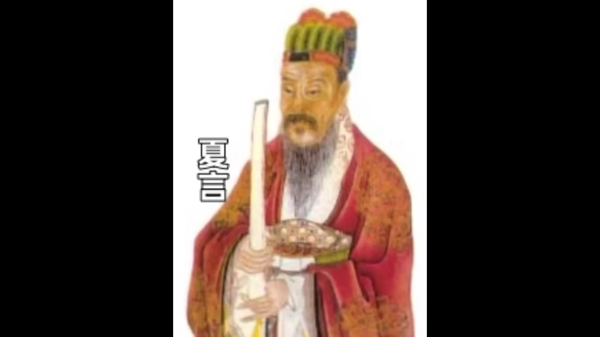
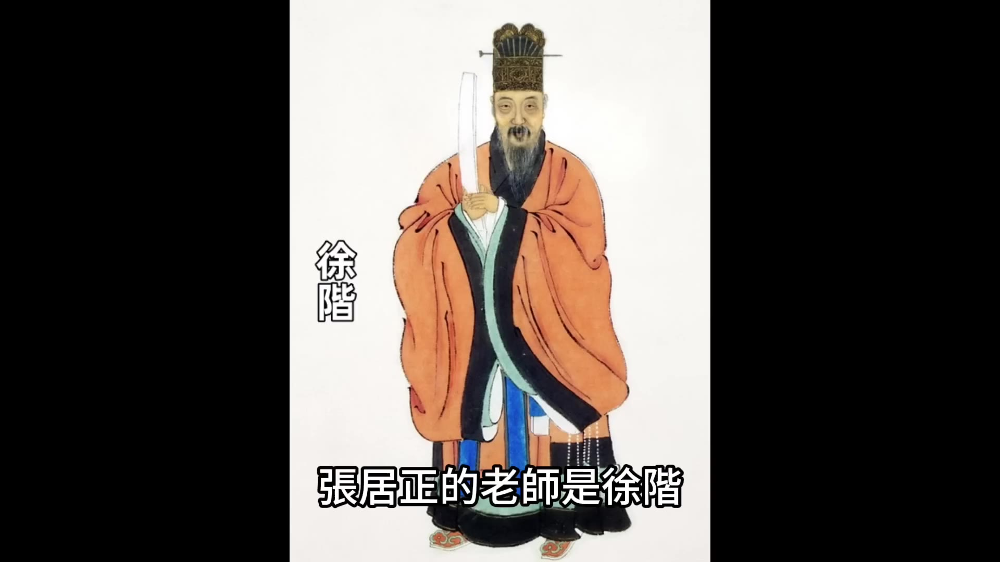
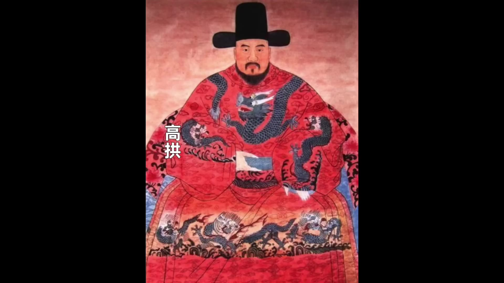
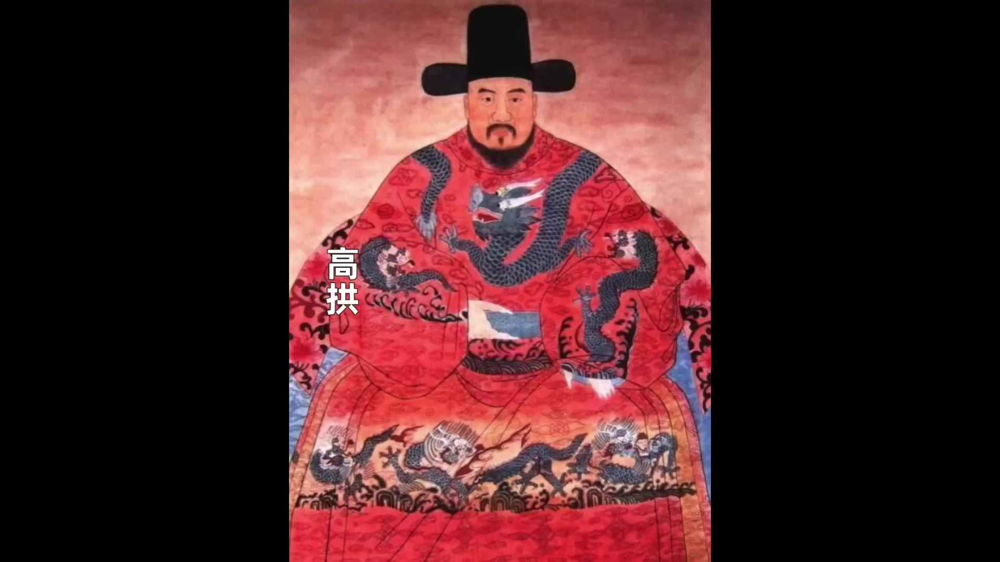
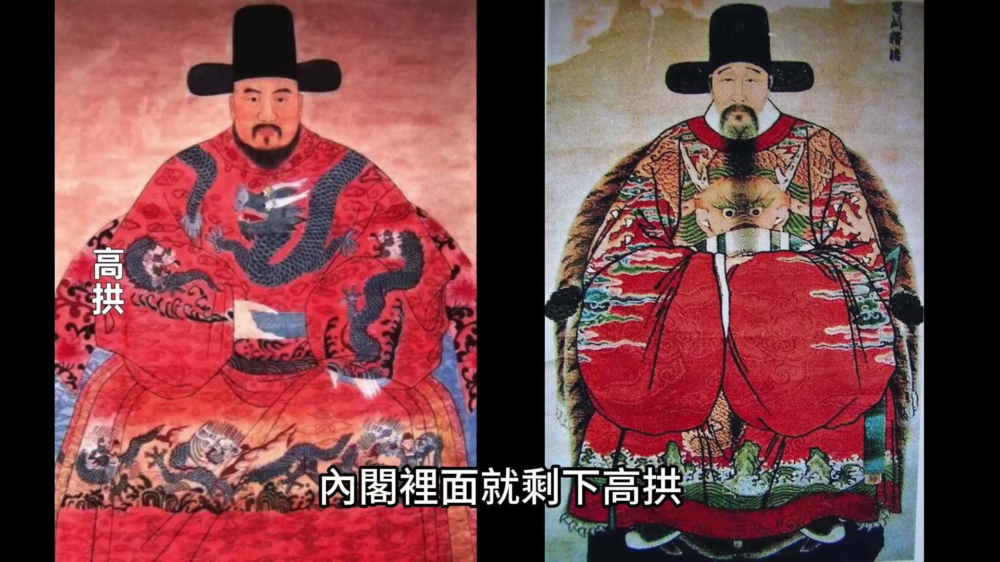
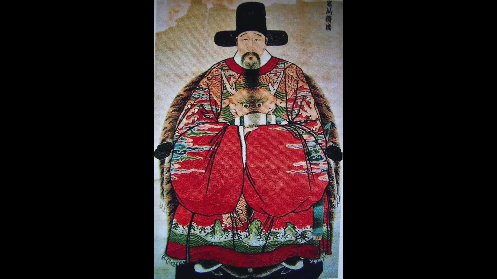
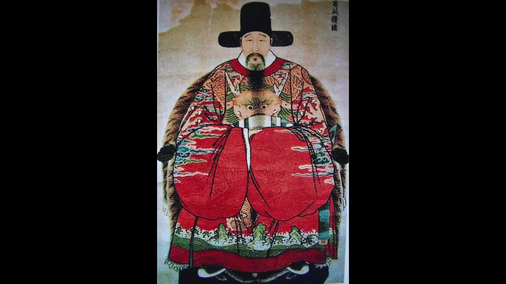
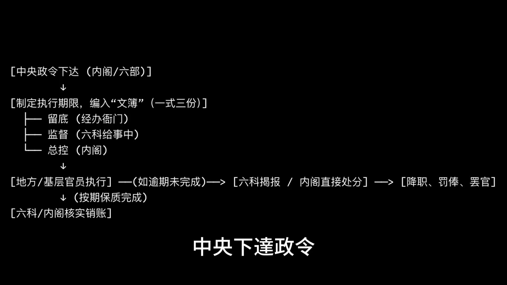
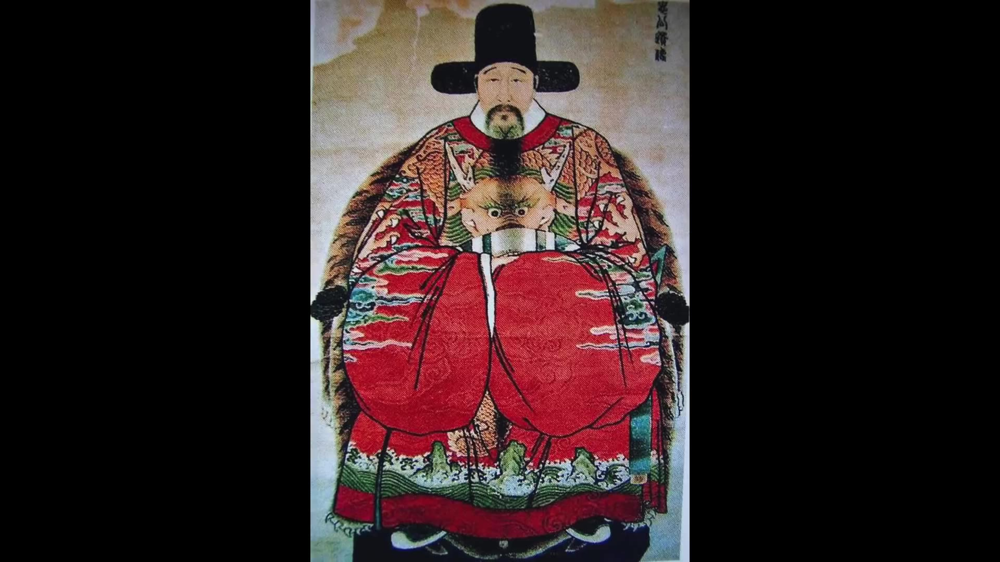

00:00:01
公元1582年，大明朝的第一首輔張居正合上了雙眼。在張居正生命的最後十年裡，他是這個帝國實際的執政者，萬曆皇帝對他言聽計從，文武百官對他俯首帖耳。張居正也對得起自己掌握的權力，他用10年時間推行改革，取得了很大成就。在張居正接手之前，大明國庫只剩20萬兩白銀，一個國家的國庫只剩20萬兩白銀，幾乎就是空了，連給官員發俸祿都不夠。當時沒錢給官員發俸祿，張居正被逼無奈，他只能給官員們發胡椒和蘇木。當時國庫裡面積壓了一些胡椒和蘇木，張居正把這些折價發給了官員們當俸祿。大家可以想象一下，那些一品二品的官員們領取俸祿的時候，拿到的是一袋胡椒和幾根木頭，他們還得自己到市場上變賣，這是一種什麼場景？官員們當然十分不滿，但是也沒辦法，朝廷是真沒錢了。這種情況要是不加挽回，明朝很快就會破產甚至會滅亡。張居正執政之後大刀闊斧的改革，他推行考成法、清丈田畝、推廣一條鞭法，一套政治改革加經濟改革的組合拳下來，成功的扭虧為盈。在張居正死的時候，大明太倉銀庫積存的白銀達到六七百萬兩，太僕寺也積蓄了400多萬兩白銀，這些錢為大明強行續命60年。張居正改革最厲害的地方是他沒有增加任何新的稅種，他的理財方針叫「不加賦而上用足」，「不加賦而上用足」就是不增加任何新的賦稅也能保證國家的銀子夠用。張居正他是把王公貴族、貪腐官僚和地方豪強這些既得利益者他們侵佔國家侵佔老百姓的財富給硬擠了出來。他這種做法當然也得罪了全天下的官僚豪紳，他活著的時候沒人敢吭聲，但是在他死了之後立刻就遭到了瘋狂的報復。萬曆皇帝不僅抄了他的家，甚至差點將他開棺戮屍，這位大明的救世主最終落得個滿門罹難的悲慘結局。張居正究竟是靠著怎樣一套不加賦的逆天手段把大明的財政扭虧為盈，同時又把全天下的既得利益者給逼上絕路的？今天我們就來聊聊這場大明歷史上最震撼的刮骨療毒。而這一切，我們還是要從張居正掌握權力開始說。
張居正出生在湖北江陵，江陵就是現在的荊州古城，後來張居正出名之後，別人管他叫張江陵。他12歲考中秀才，16歲考中舉人，然後進入到翰林院任職，一路仕途非常順利，可以說是少年得志。張居正進入翰林院的時候是嘉靖二十六年，當時朝廷的權力格局是內閣首輔是夏言，內閣裡面的另外一位核心人物是嚴嵩，夏言和嚴嵩相互構陷，勢如水火。張居正的老師是徐階，徐階當時還沒進內閣，他擔任的是吏部左待郎兼飪翰林院掌院學士，同時負責教授張居正他們這批新招收進來的庶古士，所以他是張居正名副其實的老師。徐階很器重張居正，因為張居正當時年紀很小又聰明，所以徐階很看重他，他當時就認定張居正會是朝廷未來的重臣。徐階對張居正悉心教導，當時是嚴嵩掌權，徐階讓張居正學會隱忍，讓他能在複雜的官場裡面能保存自己並且逐步升遷，所以徐階是張居正在政治上面的領路人和保護傘。張居正進入到翰林院之後，他親身經歷了嚴嵩鬥倒夏言、徐階鬥倒嚴嵩的過程，在徐階鬥倒嚴嵩的過程中，張居正他自己也深度參與，起到了很大作用。更關鍵的是，張居正作為徐階的學生，他還能取得嚴嵩的信任，這是他在政治鬥爭中厲害的點。徐階為了給張居正鋪路，他安排張居正進入到裕王府擔任講官，裕王就是後來的隆慶皇帝。張居正正是在給裕王講授經書期間取得了裕王的信任，裕王對他非常器重。到嘉靖皇帝去世，裕王登基，隆慶元年，張居正被破格提拔為吏部左侍郎兼東閣大學士，並以此身份進入內閣，當年的張居正是43歲，非常年輕，他是當時最年輕的一位內閣閣員。這時候徐階是內閣首輔，張居正是內閣閣員，師生三人在內閣中的話語權很大，但是好景不長，隆慶二年徐階就因為被彈劾辭官回鄉。徐階辭官之後，張居正從幕後走向了前台，徐階當首輔的時候，張居正都是以心腹智囊的角色協助老師執政，在徐階走了之後，張居正開始嶄露頭角，提出自己的改革理念，這時候張居正也要獨自面對政敵發起的權力鬥爭。



00:05:02
高拱與張居正皆為隆慶皇帝的老師，兩人曾在裕王府共事三十年，早年合作關係良好，皆主張政治改革。然而高拱在掌權後逐漸展現其官場鬥爭手段，先後將陳以勤、趙真吉、李春芳及殷士儋等內閣閣員排擠出內閣，使內閣僅剩高拱一人。

隆慶六年隆慶皇帝駕崩後，高拱與張居正的鬥爭公開化。雙方皆需與太監結盟以壯聲勢，高拱與司禮監掌印太監孟衝合作，張居正則與司禮監秉筆太監馮保聯手。明朝內府十二監中，司禮監權力最大，掌印太監地位等同外廷首輔，秉筆太監則次之。然而最終張居正與馮保取得勝利，原因在於新帝朱翊鈞（萬曆皇帝）自幼與馮保相處，對其極為信任。馮保更早布局，當朱翊鈞尚為皇太子時即在其身邊輔導，被稱為「大伴」。朱翊鈞登基後，馮保趁勢排擠孟衝，自任司禮監掌印太監並提督東廠，成為宮內權力核心。
明朝有規定太監職務不得由同一人兼任，但馮保突破此限，同時擔任掌印太監與東廠提督，權力空前。借助馮保的宮廷勢力，張居正成功扳倒高拱，成為內閣首輔。萬曆皇帝年僅九歲登基時，由其生母李太后、張居正與馮保三人共同輔政，史稱「李太后、張居正、馮保」三權鼎立。在李太后與馮保支持下，張居正推行改革。
張居正改革的直接動機在於財政危機。其接掌時國庫僅存20萬兩白銀，而北部九邊重鎮每月軍餉即需25萬兩，國庫銀兩連一個月軍餉都無法支應。萬曆元年前後，明朝年收入約200萬兩，固定支出卻達400萬兩，年赤字近200萬兩。為應付赤字，朝廷只能拆東牆補西牆，但至張居正接任時，這種辦法已無可持續。實際情況更為嚴峻，京官俸祿與宮廷侍衛薪餉皆無法發放，張居正只能將國庫積壓的胡椒、蘇木折銀發放。此舉導致官員領到「一麻袋胡椒與幾塊大木頭」，市場胡椒價格暴跌，官員怨聲載道，甚至出現罷工呼聲。張居正接手的，正是這樣一個瀕臨破產的朝廷。

00:10:00
這一切都要從朱元璋建立財政制度開始說起。朱元璋建立明朝的時候，他設計的財務制度是一套固定收入、固定支出、量入為出、自給自足的理想模型。明朝稅收制度也叫賦役制度，依託的主要資產是田地和人。洪武期間，朱元璋搞過兩次浩大的資產普查，一次是人口普查，人口普查形成的是「黃冊」，另外一次是田畝丈量，田畝丈量形成的是「魚鱗圖冊」。這兩次大清查完畢之後，這些田地能收多少稅都固定了下來。他的邏輯是只要全天下土地的數量不變，朝廷每年收上來的稅就是一個固定數字，這些稅能夠足夠朝廷支出，就可以不必要追求過多和盈餘。
在他的設計之下，朝廷的支出也是固定的，朝廷支出可以分為三個主要部分。第一部分是宗室的供養，宗室供養就是皇室的開銷，以及朱元璋的兒子孫子這些分封到全國各地的宗室王府的開銷。當時朱元璋的兒子孫子加到一起也就幾十個人，年花不了幾萬石糧食，支出的數量可以說是微乎其微。第二部分是官員俸祿，朱元璋給明朝官員定的俸祿是出了名的低，一個一品官員一年的總俸祿是1,000石糧食，1,000石糧食折成銀子的話大概也就是200兩左右，然後再往下一個七品的官員年總俸祿是90石糧食，90石糧食折成銀子大概是15兩左右，這跟歷朝歷代相比都是最低的水準，跟前面的宋朝相比更是低的可憐。所以明朝官員的俸祿支出也不多，所有官員加到一起每年也就消耗幾十萬石糧食。
第三部分是軍費支出，軍費支出是朱元璋最得意的設計，他用的是衛所兵制。衛所兵分為屯軍和駐軍，屯軍是負責種地和養馬，駐軍是負責操練和打仗。在內地的衛所屯軍的比例高達80%，駐軍只有20%；在北方的邊防重鎮，因為要面對蒙古騎兵，屯軍的比例就要低一些，但是也有30%到40%。具體的運作模式就是每個屯軍都分有固定的土地，由朝廷提供種子和耕具，他們種出來的糧食除了留足自己一家人的口糧之外，其他的剩下的全部都作為屯糧上交給衛所，這些屯糧用來發給駐軍。按照這樣的設計，軍隊就能實現完全的自給自足。朱元璋曾經很自豪的對大臣說：「我養兵百萬，不費民間一粒米。」所以在朱元璋的設計裡面，軍費這項最大的財政支出是被歸零的。
在朱元璋的設計之下，宗室供養、官員俸祿、軍費支出三項支出都是固定的，而且都是很低的，賦稅收入也是固定的，國家每年的收支都固定，只要收入比支出多，國家就能正常運轉。他設計的這個財務模型有幾個特點，第一是這是一個追求靜態穩定的模型，收入固定，社會結構也固定，而且軍戶就是軍戶，民戶就是民戶，他追求的是社會穩定，不追求財政增長。其實我們從朱元璋的各種制度設計就能看出來，他各方面的設計，不論是定都南京也好，對外政策也好，還是財務設計也好，都能體現出來他是一個防禦風格，他是在自己的國土範圍內自己過好日子，自給自足就挺好，不去擴張，也不去打別人，做好防禦就足夠。
第二，他堅持本色徵收，本色徵收就是收的是最基礎的糧食米和麥，就是徵收實物，朱元璋嚴禁用金銀等金屬貨幣進行交易。第三，他堅持以農為本，重農抑商，朱元璋嚴格的抑制商人的流動性，對商業行為非常排斥。朱元璋的這種設計屬於是防禦性的財務設計，不是擴張型的設計。這種設計對於經歷戰亂之後恢復社會的穩定有好處，但是它只能做到以最低成本維持帝國的基本生存，很難進行擴張，也嚴重缺乏彈性和動態的調整能力。
這套制度運行一百年，三百年到萬曆時期就出現了巨大問題，朱元璋引以為傲的固定收入、固定支出都出現了很大問題。先說收入問題，明朝的賦稅制度是以土地面積為基礎定量收取的。朱元璋時期洪武二十六年，明朝進行全國的土地丈量，土地丈量之後全國登記在冊的耕地面積是850萬頃，而到弘治十五年，全國登記在冊的耕地面積只剩下了422萬頃，422萬頃比850萬頃正好少了一半。這個數據其實很不合邏輯，從洪武二十六年到弘治十五年是109年時間，109年時間。
00:15:01
耕地面積居然少了，這與明朝經過一百多年的穩定發展應有的趨勢背道而馳。按理說耕地面積應該大幅度增長，但現在耕地面積不僅沒有增長，反而減少了一半，這就是詭異之處。消失的土地當然不是真的消失了，生地也不可能消失，土地只是在賬面上消失了。這些在賬面上消失的土地，都變成了王公貴族、貪官污吏、地方豪強兼並和隱藏的土地。
他們具體是怎麼運作的？我們舉幾個例子。首先要說一下他們有操作空間的基礎，是根據明朝的規定，有一些人的土地是不用交稅的，這些人被稱為優免階層。優免階層大概可以分為五類人：
第一類是皇族宗室。明朝從朱元璋開始，就是只留太子在京城，其他的皇子都被分封到全國各地，他們在各地王府擁有的莊田是不用交稅的。
第二類是功臣。功臣指的就是為國家立過大功的人，比如說跟隨朱元璋開國的，或者跟隨朱棣靖難的功臣，他們被封為公、侯、伯等爵位，這些爵位是可以世襲的，他們名下的莊田也不用交稅。
第三類是皇室的外戚，比如說皇帝的岳父、皇后的弟弟、公主的駙馬等等，這些人皇帝會賞賜他們土地，他們的土地也不用交稅。
第四類是官戶。官戶就是家裡面有在任的官員或者有退休的官員，額定的賦稅和全部雜役，比如說一個一品的京官可以免糧稅30百，可以免除人丁30于，這個額度按照官員品級逐級遞減，退休的官員可以免除原定額度的70%。
第五類是儒戶。儒戶主要指生員，生員就是從秀才往上的讀書人，他們也有法定優免權，每個生員可以免糧兩石、免丁兩丁。
這些可以享受優免特權的人群，其實在明朝初期能獲得優免權的人並不多，比如說朱元璋時期他的宗室子孫一共也就幾十個，但是到了二百年後就完全不一樣了。萬曆初年宗室人回活著的膨脹到了28,000人，到萬曆二十二年宗室人口漲到了62,000人，宗室人口增長的速度是翻著倍的往上漲的。洪武年間受封的爵位只有49人，到嘉靖八年受封的爵位增加到了8,203人。每個宗室被冊封的時候，皇帝都要給他分封土地，得到分封的土地可能更多，比如說萬曆皇帝賜給潞王的土地一次就賜給了上萬頃，這些都是免稅的。還有一些是皇親國戚和受寵的太監，皇帝也會賜給大量的田產，這些田產本來是要交稅的，皇帝賜給他們之後都變成了享有優免權的不用上稅的土地。
光這些優免階層通過二百年的膨脹佔有的免稅土地就已經很多了，更嚴重的是他們還跟地方官吏勾結，非法佔有並且隱瞞了更多的土地。他們常用的方法有詭寄、有投獻、有影射等等。
什麼叫詭寄？我們分別來說一下。詭寄就是指一些無權無勢的小民戶，他們為了規避沈重的賦稅，把自己的田產登記在享有優免權的官戶或者王府名下，建立一種庇護關係，這樣他們的田產不用交稅，庇護他們的官戶或者王府可以收取一定的保護費。這樣對雙方都有利，但是朝廷的稅收就消失了。
最有名的一個例子就是徐階家族。徐階在卸任首輔居家期間，他家族在松江佔有大量田產，這些田產被海瑞給查出來了。徐階對海瑞說，這些並不都是我家的產業，很多都是別人詭寄在我家名下的，這就是詭寄。
還有一種是投獻。投獻也是一些不堪重負的小民戶，他們被迫把土地投獻給王府，投獻給王府之後，土地就變成了享受優免權的土地，他們人也變成了王府的家奴或者變成了王府的佃戶。
再說影射。影射是指通過弄虚作假來規避稅收，比如說把耕地報告為荒地，把上等的優質的土地變成下等的貧瘠的土地，這些都是規避稅收的方法。
這些操作都是王公貴族通過隱瞞土地的手段，使國家稅收大量流失。除了這些之外，還有一些更多的操作手法是把稅加到了貧窮的民戶身上，比如說在賣田的時候，有的民戶他為了賣出高價，採用了賣田留稅的操作。賣田留稅就是把地賣給大地主了，但是把稅留在自己頭上，這樣當時他們獲得賣田的錢多，但是給自己造成了永久的稅賦，這就造成了有人是有田而無稅，有人是無田而有稅。
還有一種操作叫飛詭。
00:20:00
飛詭也叫飛灑，是指地方上有錢有勢的地主與衙門裡的書辦、算手等胥吏勾結，透過化整為零的手法，將自己名下應納稅的田產分散登記在多個不相關的民戶頭上。例如萬曆二十六年南直隸常州府有一個姓金的總書，利用職務把600多畝田地的稅額分攤到了全縣幾乎所有的民戶頭上，讓全縣百姓都替他納稅。飛詭造成的結果是，有錢有勢的地主豪強有地而不用交稅，沒錢沒勢的普通農民沒地反而要多交稅。這些地方豪強逃稅造成了兩個惡果：第一個是國家能收上來的稅變少了；第二個是沒錢沒勢的農戶承擔的稅負變重了。
他們承擔的稅為什麼變重了？是因為根據朱元璋的設計，每個府不管你土地被隱藏起來多少，都是按照最開始規定的稅額來上交。例如在明朝初期一個縣登記在冊的土地有2,000頃，要交納的稅額就是按照這2,000頃的土地計算出來的，這個稅額被確定之後就固定下來，以後每年都是按照這個定額來交。儘管在之後的一百年、二百年里這個縣的土地可能被豪門兼並，可能被各種方法隱藏了，比如說五百頃只剩下1,500頃是可以納稅的土地，這個縣的整體稅額還是不變，所以剩下那1,500頃的土地的民戶就要多交稅。也就是說一個縣被隱藏起來的土地越多，剩下的民戶的稅賦負擔就越重，甚至重到他們根本承受不了的程度。
他們到了承受不了的程度，就會選擇兩種出路：第一種是投靠，就是不僅把自己的田產掛靠到貴族的豪門門下，他們把自己也變成了豪門的奴僕或者佃戶，這樣他們不僅不用交稅還可以免除勞役；第二種出路是逃亡，就是人實在不堪重賦了，只能選擇逃跑變成流民。明朝最基層用的是里甲制度，十戶為一甲，每一里每一甲要負擔的稅賦和繇役都是固定的。甲裡面有人投靠豪門或者有人逃亡之後，剩下的民戶就要分攤他那部分賦稅和繇役，每人的賦稅和繇役都會變重。一甲裡面是十戶，十戶裡面要是有三四戶逃亡了，剩下的民戶就會不堪重負，甚至活不下去也跟著逃亡，這樣整個甲就都會逃亡。一個甲都逃亡了，這個甲要負擔的賦稅和勞役就要由這個甲他所在的里這個里裡面其他的甲來負擔，其他甲的負擔就會變重。到明朝後期有的里裡面就會所有的甲都逃亡了，變成了空前的大逃亡。這些逃亡的民戶都變成了流民，他們就是起義造反的種子。所以這些豪門貴族兼並土地、隱藏土地造成的惡果就是國家收不上錢，養肥的只有他們自己，這就是明朝收入減少的主要原因。
我們再看支出方面，明朝的三大支出第一項是宗室開支。宗室開支在朱元璋時期他的子孫並沒有多少，宗室開支幾乎可以忽略不計。但是到了萬曆時期宗室人口爆炸性的增長，載入玉牒的人數已經突破了10萬人，這些人是純靠地方財政養著，有些地區的稅收甚至都不夠支付當地王府的祿米。例如山西省在洪武年間全省只有一個晉王府，每年要支付的祿米只有1萬石，但是經過一百多年的繁衍到嘉靖八年，將軍等山西宗室裡面受封的郡王、職銜的人數已經猛增到了2,000多人，每年需要支付的宗室的祿米暴增到了87萬石。87萬石和最初的1萬石相比增加了87倍，供養宗室的支出增加了87倍，而可以收稅的耕地面積在大量減少，這就導致地方的財政枯竭，全省的賦稅甚至都不夠支出王府的祿米需求。
明朝的第二項主要開支是官員俸祿。明朝的官員俸祿非常低，這個我們在前面已經說過了。官員俸祿低在洪武年間沒有問題，因為朱元璋對官員非常嚴苛，只要抓到哪個官員徇私枉法他直接就上重刑，懲罰的力度非常重，所以官僚都不敢貪腐。但是到明朝中後期就不一樣了，官員貪腐的情況越來越嚴重，對於很多官員來說朝廷俸祿甚至都可以忽略不計，他們從其他地方弄到的錢遠遠多於俸祿。不說別的事，就說徵稅的過程，稅收的徵收和起運過程中各級官吏能弄到的錢就是很驚人的，像嘉靖時期的嚴嵩更是出了名的貪財，他辦事賣官都是明碼標價，這也是蛀空明朝的一個重要方面。
明朝的第三項重要開支是軍費。軍費按照朱元璋的設計是通過軍屯可以完全的自給自足，但是這種設計是理想模型，根本沒堅持多長時間。在明朝初期全國的軍屯面積是90萬頃。
00:25:01
通過軍屯徵收的糧餉能保證軍隊支出的70%左右，剩下的30%要通過開中法來補足。開中法是明朝一項獨特的發明，當時明朝邊關的糧食不夠，要是把糧食從南方富庶的地區運到邊關需要耗費巨大的人力物力，運輸人員在路上消耗的糧食甚至可能都要多於送達的糧食。這個運輸費用朝廷不想承擔，朝廷就想了個方法，他讓商人負責從內陸往邊關運送糧食，然後給商人發鹽引。明朝的鹽是國家壟斷資源，商人需要拿到鹽引之後才能運鹽賣鹽，由於是壟斷資源，所以賣鹽可以獲得的利潤也是非常可觀的。開中法的流程就是商人負責把糧食運到邊關，然後朝廷會給商人開出鹽引，商人拿著鹽引到鹽場提鹽，最後到指定的區域賣鹽，這樣朝廷沒花一分錢就把糧食運到了邊關，而商人通過鹽引也能獲得收入，這就形成了一個完美的閉環。這個完美閉環到明朝中後期也被特權階層給破壞掉了。到明朝中後期的時候，經常出現的情況就是商人拿著鹽引到鹽場提鹽卻提不出來鹽，因為鹽場的鹽都被某位皇親國戚或者有權勢的太監給預定了，商人只能排隊等等，就是等好幾年，最後商人都不願意往邊關運糧了，開中法也就被破壞了。開中法後期雖然被破壞了，但是在明朝的前期還是起到了很大作用，明朝前期靠軍屯和開中法還可以完全的負擔軍費的開支，但是到明朝中後期軍屯制度也被腐蝕了，軍屯制度的腐蝕也是慢慢發生的。
因為明朝的衛所制度裡面軍官的職位是世襲的，所以幾代人傳下來，衛所的指揮使、千戶、百戶們他們就都成為了地方的土皇帝，這些軍官開始瘋狂的侵佔原來屬於國家的軍屯土地，他們把這些土地變成了自己的私產，更誇張的是他們把普通衛所裡面的士兵當成了自己的免費奴役，讓他們給自己種地、給自己蓋房子。對於底層的軍戶士兵來說，他們日子過得比普通農戶還要慘，他們不僅要承擔沈重的繇役，還要被長期剝削。君不見京師養兵三十萬，有手何曾捻弓箭。太倉有米百不愁，飽飯且趁構欄遊。太倉有米百不愁，飽飯且趁構欄遊。君不見京師養兵三十萬，有手何曾捻弓箭。太倉有米百不愁，飽飯且趁構欄遊。太倉有米百不愁，飽飯且趁構欄遊。他們每個月領到的糧食是幾鬥倉底的陳糧，一半是陳沙，根本就沒法吃飽，因為軍戶是世襲的，所以他們也不能改行也不能改戶籍，活不下去的士兵只能逃亡，到正統、成化年間，有的邊防衛所發生了成群結隊的大逃亡，很多衛所賬面上有1萬人，但是實際上逃亡了一大半，剩下的只是一些老弱病殘，土地被軍官給私吞了，士兵逃跑了，地方衛所為了掩蓋罪行採用的方法是向朝廷報假賬，一直到蒙古騎兵打過來的時候，朝廷才發現這些衛所原來既沒有兵也沒有糧，由於軍屯制度被徹底破壞了，明朝邊防的供應就不得不從自給自足轉向了中央供應。
明朝初期中央幾乎不用給邊防撥發軍費，但是到了嘉靖、隆慶年間，邊餉的開支直線上升，這是造成明朝財政崩潰的一個很主要的原因，而且由於原來的軍戶都不能打仗了，朝廷只能花高價來雇傭職業軍人，比如說戚繼光的戚家軍就屬於是職業軍人，他們必須靠中央的軍費支撐，要是沒有軍費他們甚至可能發生兵變，按照萬曆年間的數據，萬曆元年前後全國每年的賦稅收入是270萬兩左右，這400萬兩絕大多數都是九邊軍費，到萬曆十八年之後軍費支出更是常年穩定在了400萬兩以上，軍費支出暴增，宗室支出暴漲，這就是明朝財政支出擴大的主要原因，而土地被大量的兼並和隱瞞是朝廷稅收減少的主要原因，所有這些因素都算上造成的結果就是朝廷和底層老百姓越來越窮，而宗室貴族、貪官污吏、地方豪強這些國家的蛀蟲越來越富，這就是在張居正改革之前國家所面臨的困境。
今天就先講到這裡，下期節目我們繼續講講張居正，他是怎麼改革的，他是怎麼從這些既得利益者的手裡把錢給摳出來的。1921-1945年的專題歷史課程，我開通了，有興趣的朋友歡迎點擊影片下方鏈接瞭解，歡迎大家點贊關注。
大家好，今天我們繼續講張居正改革。
張居正改革可以說是歷史上少有的見效很快的改革，他憑借一己之力扭轉乾坤，居然能讓所有的既得利益者把吃到嘴裡面的利益給吐出來，張居正是怎麼做到的，今天我們就要聊聊這個改革的過程。
00:30:00
張居正改革分為四個階段，分別是掌握權力的政治改革、穩固邊防與財政改革。張居正的最終目標在於財政改革，但他在推行財政改革之前，先進行了政治改革與邊防穩固。他深知若政治不改革，經濟改革將難以推進，因此先著手這兩項工作。在政治改革之前，張居正首先做的關鍵一步是掌握絕對權力。
張居正在改革之前已歷經20年政治生涯，深知要推動改革必須掌握絕對權力。他早年曾兩次提出政治主張：第一次是在嘉靖二十八年，當時26歲的他上呈《論時政疏》，指出國家五大問題，但奏書未獲重視；第二次是在隆慶二年，他提出《陳六事疏》，不僅指出問題，更提出具體改革方案，此後成為張居正改革的綱領性文件。然而當時他在內閣地位尚未穩固，再好的方案也難以實施。透過多年政治鬥爭經驗，他最終在激烈鬥爭中將高拱鬥下台，掌握外廷最高權力。

掌握外廷權力後，張居正與掌印太監馮保結盟，打通外廷與內監之間的堡壘。明朝歷來外廷文官與內廷太監對立，但張居正為消除太監阻力，以內閣首輔身份與馮保合作，此舉前所未有。馮保不僅助他鬥垮政敵高拱，更與張居正內閣的票擬權、司禮監的批紅權結合，使國家大事由兩人決定。張居正與馮保更聯合萬曆帝生母李太后，形成穩定政治鐵三角，使其掌握絕對權力。
掌握權力後，張居正開始改革。他深知再好的政策若無高效官僚執行，終將爛尾。當時明朝官僚系統已失效，中央政令下達地方後常被視作具文，地方官員甚至可能中飽私囊。因此他先推行政治改革，其中核心是「考成法」。此法類似現代KPI制度，將行政事務量化為可追蹤的流水線作業。

考成法具體流程分為兩步：第一，中央政令下達時，各級衙門需設定完成期限，並編入「文簿」。文簿一式三份，第一份由經辦衙門留存，第二份交六科給事中作為考察依據，第三份送內閣審核。第二步是地方官員執行政令，若按期保質保量完成，六科與內閣會核實銷賬；若逾期未完成，六科上報後內閣給予處分。此法最厲害之處在於層層監督機制——中央六部核查地方執行情況，六科監察六部，使原本流於形式的職能重新發揮作用。

00:35:00
擔負起監察六部的責任，而且要把監督落到紙面上具體的做法，就是要根據文簿對六部完成的情況進行逐項核銷。核銷的過程中如果發現六部有隱瞞的情況，必須進行彈劾。第三層監督機制是由內閣監督六科，這一層是張居正考核法的最重要的環節，他是充分利用了六科的功能。一下六科，我們先簡單說，六科給事中是明朝一個很有特色的制度，朱元璋設立這個職位的時候，是為了讓他們對皇帝的旨意進行審查，對六部的執行進行監督，所以六科給事中是個監察機構「科道官」，他們和都察院御史合稱為兩個部門，共同構成明朝的監察體系。不過御史側重考察地方和具體事務，六科給事中側重考察京城六部的工作情況。六科給事中的品級很小，般都是七八品的小官，但是他們掌握的糾察權卻是一個很大的權力，這樣「以小官制衡大官」的結構是朱元璋特意設計的，他為的是在制度層面對六部構成一種制衡性的力量。六科給事中是直接對皇帝負責，獨立於任何部門，受任何部門的管理，也包括內閣。現在張居正設計的考成法，他讓內閣負責監察六科，從本質上來說是破壞了六科的獨立性，這點被很多人所批評。但是從流程上來說，張居正建立了一個完整的監控閉環：內閣監控六科，六科監控六部，六部監控地方官員，這樣的層層監控能保證中央的政令可以直接到達基層並且得到落實，這樣內閣的權力就空前的擴大。
內閣實際上是架空了傳統的六部，使六部淪為內閣的執行機構。考成法實行之後，明朝官場的風氣發生了根本性的轉變，以前那些渾水摸魚的推諉扯皮的官員都開始精神抖擻的辦事。以前官員辦事從來不關心實際的結果如何，現在是結果問責制，所有人都緊盯結果要為結果負責。考成法的懲罰措施也是很嚴格的，不能按期完成任務的官員就算作失職，失職的官員按照嚴重程度會被罰俸祿、會被降職或者革職。在考成法實行期間，有上千名中央官員和地方官員受到不同程度的處分。張居正也因此被很多官員所忌恨，這也是他死後遭到瘋狂報復的原因之一。通過推行考成法，張居正做到了讓大明這台腐朽的官僚機器可以重新工作，這為他推行財政改革打下了基礎。
在政治機器重塑完成之後，張居正開始解決邊防問題，因為邊防軍事花的錢佔到了每年財政支出的最大頭。
張居正的策略分為兩方面，一方面是重用人才，一方面是對外的策略。先說重用人才，張居正不拘一格的重用戚繼光、李成梁等名將，他讓戚繼光長期的鎮守薊州，在北方修築長城和訓練新軍，使得京師北面穩如磐石。他讓李成梁鎮守遼東，通過積極的防禦和分化策略穩定了東北的邊疆。在支持這些名將的過程中，張居正突破了很大的阻力，比如說戚繼光為了解決北方戰鬥力低下的問題，他堅持要南兵北調，就是把南方紀律嚴明的士兵調到北方來，當時朝廷上的大臣對這個舉動紛紛反對，張居正自己力排眾議保護戚繼光，他甚至讓萬曆皇帝下旨讓地方官員不准阻撓戚繼光的練兵計劃。這是第一方面重用軍事人才。第二方面是對外策略，張居正的對外策略叫做「東制西懷」，「東制」就是對東北方向的敵人以剿為主，張居正讓李成梁在遼東執行以攻為守的方針，通過主動出擊來防禦東北。『西懷』就是針對西北韃靼部的俺答汗，張居正以撫為主，他實行互市，允許蒙古人用馬匹等物資交換申原的茶葉、布匹、鐵器等生活必需品。張居正的策略獲得了很大的成功，了少見的數十年的和平景象，這樣就使得邊防軍餉的開支大幅度壓縮，而且還給張居正的財政改革提供了一個穩定的環境。
在整頓吏治和穩固邊防之後，張居正開始了他的財政改革。他財政改革的第一步是清丈土地，士期節目我們講過，明朝稅收減少最主要的原因是因為王公貴族、地方豪強他們兼並土地並且隱瞞土地，張居正當然很清楚這個情況，他要從根本上解決這個問題，從根本上解決問題就是重新清丈土地，通過清丈土地把被隱藏的土地挖出來，讓該交稅的人無法逃避。萬曆六年張居正首先拿福建當試點，在福建實行土地清丈。
00:40:01
選擇福建作為試點是基於其地形複雜與管理混亂的特點。福建的田地多分布於山谷峻嶺之間，還有大量梯田與瀕臨江澳的灘塗，這種地形使清丈難度遠高於其他省份。管理混亂則體現在福建官員治理不力，社會矛盾尖銳。張居正認為，若能在福建這樣極具挑戰性的地區突破成功，再向全國推廣將更具說服力。因此他指派心腹耿定向出任福建巡撫，承擔清丈重任。
耿定向抵達福建後，歷時一年半時間克服重重困難，完成全省大規模清丈。此舉鼓舞了張居正，使其總結福建經驗擬定《清丈田糧八條》。萬曆八年，張居正向全國頒布此文件，啟動全國大清丈。由於此前已推行考成法，此輪清丈迅速推進至基層。張居正要求各省州縣官員親自下鄉，依統一度量衡重新測量官田、民田及皇親勳貴莊田，編制更新《魚鱗圖冊》。
此規模性清丈直接觸動王公貴族與地方豪強利益，引發激烈反抗。例如山西大同在清丈時，饒陽王府與潞成王府等宗親極力阻撓，甚至煽動宗室成員抗議，聲稱要進京「陳情」。大同地方官員因畏懼宗室權勢，僅上報張居正。

張居正認為若不壓制宗室反撲，全國清丈將功虧一簣。在李太后與馮保支持下，他成功說服萬曆皇帝下令整治宗室，將帶頭鬧事的潞成王府將軍朱俊槨革去爵位、廢為庶人，對其他參與者則分別處以革除祿米與罰祿半年的處分。此舉對全國抗拒清丈者形成強烈震懾。
張居正以該案為範例，通過萬曆皇帝向全國下達嚴令，明確表示清丈土地必須一視同仁，凡阻撓者皆依法從重處理。在張居正鐵腕執行下，全國大多數省份僅用三年便完成清丈。此輪清丈成效顯著，全國查實登記的徵稅生地達701萬頃，較弘治時期賬面數據多出280萬頃。這些新增土地皆為王公權貴與地方豪強長期隱藏的偷稅漏稅田產。
在全國大清丈同時，張居正亦下令統一推行一條鞭法。要說明此政策，需先了解明朝賦役制度。該制度由「賦」與「役」兩部分組成，「賦」即田賦，針對田地徵收；「役」即繇役，針對人口徵收。田賦制度沿襲唐宋兩稅法，分為夏稅與秋糧，徵收時間有明確限制，逾期將受懲罰。課稅標準根據土地面積與等級確定，土地等級劃分複雜，官田與民田稅額不同，官田包含皇莊、屯田等類型，稅額高於民田；民田則為民戶私有財產，可自由買賣。不同地區土地等級劃分標準不一，有分五等者，也有分三等九則者，稅率隨等級高低而異。
00:45:02
根據這些規則算下來不同性質的田地稅率都不同，所以一個縣的稅率有時候會多到幾十種，有的縣甚至要超過一百種。這是稅則的計算很複雜，賦稅徵收的過程也很複雜。明朝收稅是以本色徵收，般夏稅收的是小麥，秋糧收的是米。除了米和麥之外，你也可以交絲、絹或者銀錢，但是這些都得折色。折色就是把這些物品折價成本色米的價值，比如說你交的是絲，絲根據當時的行情可以折成多少石本色米，要根據折價來進行上交。很多農作物作為稅收上交的時候都要折色，就算是米，比如說有白熟粳米、白熟糯米等等，它們也需要折成本色米的價值來上交。這個折色的過程是看吏可以侵害老百姓的地方，他們收稅的時候任意提高折價，這樣老百姓交的稅就會變得更多。因為折色物品的種類太繁多，很多時候多到幾十種，所以一般的小老百姓很難知道折價到底應該是多少，就算他們知道也經常被盤剝欺負。這是賦稅徵收的過程。
徵收之後還有一個重要環節是解運，解運就是把收到的米、麥和折色物品送到指定的運輸地點，三般都是指定的倉庫。明朝的倉庫遍布在南北兩京，遍布在十三省和邊鎮的衛所，某項稅糧應該送到哪個倉庫都是有規定的。對於一個地區的老百姓來說，倉庫的遠近對他們影響很大。除了倉口的遠近之外，還要考慮到用途的緩急，有的稅糧用的急就需要先解運，有的稅糧不著急就可以後解運。所以明朝的賦稅從定稅則到徵收到解運是一個非常複雜的過程，這個過程越複雜環節越多，經辦的胥吏可以侵害老百姓利益的方法就越多。
然後我們再說明朝的繇役制度。剛才說的賦稅制度是根據地來徵收的，繇役是根據人來徵收的。確切來說役的徵收應該先按照戶來區分。明代的戶是按照職業來分的，主要有三種戶是軍戶、匠戶和民戶。軍戶要服兵役，這兩種是特殊的役，我們主要說一下普通民戶要服的役。普通民戶要服的役大概可以分為三種是里甲、均徭和雜泛。里甲是明朝最基層的行政組織，一百一十戶為一里，十戶為一甲，每十年之中每甲的每戶都要應役一次。里甲的役被稱為般做的事包括收解賦稅、幫助官府辦差、接待過境的官員等等。里甲是以戶為主體應役的。均瑤是以丁為主體應役的，明朝的丁是16歲到60歲的男子都要應丁役。均瑤大概可以分為兩類，一類是力差，力差是親身服役，比如說皂隸、獄卒、長夫、馬夫等等，比如說皂隸、另外一類是銀差，銀差是把應役折算成銀兩，把銀子交給官府由官府雇人來幹。這是均徭。除了里甲和均徭之外還有雜泛，雜泛就是其他的一些不經常性的差役，比如說修河堤、比如說修倉庫等等。這是明朝大概的繇役制度，其實這裡面還有很多的細分。
比如說按戶服役的時候，戶和戶還不一樣，戶通常被分為三等九則，有上E戶、上中戶、正下戶等等。繇役制度這麼複雜，其中吏可以操作的空間也很大，比如說他們可以篡改黃冊，隱瞞有特定關係的戶口，比如說他們可以調整戶則的高下，讓一些大戶少服役，比如說他們可以調整你服役地方的遠近，調整你服役的類型，你服役幹的是好活還是累活，這些事情通過打點都可以操作。官吏操作繇役的空間比操作賦稅的空間還要大，因為賦稅有定額，官吏即使以損耗等理由多收，多收的也是有限的。繇役就不一樣了，繇役可以因為臨時有事件編派，沒有一個上限，所以不容易限制，所以繇役可以操作的空間更大。賦稅和繇役大概就是這種情況，賦稅和繇役都算上，整個過程越複雜，貪官污吏可以侵害老百姓的利益就越多。一條鞭法的產生就是要改革賦稅和繇役的複雜度，自標就是把所有的賦稅所有的繇役都合到一起統一編派。所以一條鞭的『鞭』正字應該是『編』，就是把所有的賦役都編到一起的意思，俗稱一條鞭。一條鞭法並不是張居正發明的，在張居正改革之前一條鞭法已經存在很長時間了。一條鞭法形成的過程是在全國各地有很多地方都有想把賦稅內部和繇役內部合併的需求，因為原來的賦役徵收實在是太繁瑣了。
00:50:02
張居正改革最直接最顯著的成果是他讓明朝的財政大幅度增加根據記載在萬曆十年張居正去世的時候太倉銀庫的積蓄達到了六七百萬兩太僕寺的積蓄也達到了四百多萬兩這個數字足夠明朝十年的正常開支除了白銀之外糧食儲備也是多的驚人當時京師和通州各糧倉儲備的糧食總量超過了1,3300萬石這些糧食足夠供應十年之需張居正剛接手朝政的時候太倉銀庫只有20萬兩白銀連官員的俸祿都不夠發經過他十年的改革財政收入簡直是翻天覆地的大變化而且他還擴大了稅基通過清丈土地將近300萬頃的課稅士地在中央財政好轉的基礎上張居正還多次的奏請皇帝減免全國拖欠的錢糧減免的金額累計達到600萬兩以上老百姓得到了實實在在的實惠
_圖示：一條鞭法推行前後的賦役變化對比
他的第二項成果是清丈土地和一條鞭法的推行
均賦役就是說以前地方豪紳隱藏起來的土地這些土地的稅收都是由弱小的農民來承擔的現在通過清丈土地這些隱藏的土地被查出來了大家一起均攤土地賦稅第三項改革成果是明朝的行政效率有了脫胎換骨的變化張居正革除了20%到30％的冗員剩下的官員在考成法的監督之下行政效率變得極高所有的官員不再得過且過整個朝廷上下形成了「朝下旨而夕奉行」的風氣第四項改革成果是明朝的邊防得到了穩固西北互市十分繁榮遼東三戰都是告捷朝廷省下了數以千計的軍費這是張居正改革帶來好的效果但是效果不光有好的方面也有很多弊端我們來說說這些弊端第一個弊端是一條鞭法要求全部交納白銀這對於商品經濟發達白銀流通順暢的江南地區來說是好事但是對於像西北、西南等偏遠落後的地區是一個很大的負擔這些地區白銀匱乏農民手裡面只有糧食沒有白銀為了交稅他們必須把糧食賣掉換成白銀每次到納稅的季節全體的農民都在集中拋售糧食換白銀這就導致了這個時期糧價暴跌銀價暴漲農民實際上付出的實物糧食反而變多了三條鞭法在推行的時候南北的差異就很大阻力主要來自於北方受到阻力的時候張居正強行推進雖然他也因地制宜
大家一開始是想把幾項賦稅合在一起徵收或者幾項繇役統一折算成銀子一起上交慢慢呢就形成了越來越多的賦役被合到一起這是一條編法的雛形一條鞭法這個名字第一次出現是在嘉靖十年御史傳漢臣在奏疏中正式提出在嘉靖、隆慶年間一條鞭法在廣東、浙江、福建江西這些南方省份推行算是試運行階段張居正改革開始之後他把一條鞭法和清丈土地相結合執行
一條鞭法看起來是把賦稅都整合到一條實際上是經過了三項大的整合第一項整合是把所有的田賦以前各種各樣名目繁多的田賦都整合成一項然後把所有的繇役也都合併到一起這樣就不再分項徵收就省去了中間無數的盤剝環節第二項整合是將役歸田按畝分攤將役歸困這是很具有革命性的一步過去繇役是按照人口來派發的這就導致有權有勢的富貴人家他們地多人口也多但是呢他們可以通過各種各樣的操作去免除繇役而窮人家的地少或者說根本沒有地卻還要服很重的繇役將役歸田之後就是不再按照人口來派發繇役而是根據田產多少來派發繇役田產多的富貴人家就要多出繇役田產少的人家就少出繇役這樣就減輕了沒田或者少田的貧苦農民的負擔第三項整合是化實物徵收為貨幣徵收除了極少數的特定地區和特定物品之外全國所有的賦稅都不再徵收糧食全國所有的繇役都不再出人力而是全部都折算成白銀繳納百姓只需要在規定的納稅季節
所以一條鞭法的推行是三次非常大的賦稅簡化不僅是明朝的財政改革甚至可以說是中國帝制時代賦稅進化的一個里程碑事件農民因為不再用親身服役了大批失去土地的農民或者不願意務農的農民他們開始走進城市出賣勞動力這直接促進了明朝後期江南地區工商業的發展
00:55:01
允許各地根據不同的情況調整，但是總體來說北方農戶在交納白銀這點上受到了不同程度的傷害。還有一點需要說明的是，就是張居正他能夠成功的推行一條鞭法，有一個很重要的前提是當時世界上正迎來一次史無前例的白銀產量大爆發。16世紀的中後期西班牙在美洲發現了巨型銀礦，同時日本的銀山產量也達到鼎盛，西班牙人和日本人用這些白銀、瓷器和茶葉購買明朝的絲網，這就導致白銀大量流入明朝。這些白銀的流入為明朝推行一條鞭法提供了貨幣基礎。
_圖為16世紀美洲銀礦與白銀流入明朝的示意圖_
但是到明朝晚期由於世界局勢發生變化，從外部流入到明朝的白銀大幅度減少，而明朝自己呢又由於連年戰爭大量的白銀都被消耗掉或者被富豪官紳所囤積，這就導致市場上流通的白銀大幅度減少。而由於一條鞭法的推行，明朝對於白銀的需求又是剛性的，百姓交稅必須換成白銀，所以百姓必須用更多的糧食才能換到需要的白銀，這就導致百姓受到了不同程度的傷害，他們需要納的稅變相的變多了。
_圖為一條鞭法實施後稅負變化的數據圖表_
所以一條鞭法有利有弊，在折算成白銀的時候又使百姓增加了賦稅，這是第一個弊端。第三個弊端是考成法的高壓，這種高壓造成了基層官員暴力催徵。張居正的考成法把指標壓得太死，如果地方官員不能按時完成徵稅任務就會面臨被罷官流放的下場。在生存的壓力之下，很多地方的知縣為了完成住務，他們對底層的百姓進行殘酷暴力的催徵。當地方有災情的時候，他們也不顧災情強行的逼迫農民交稅。
第三個弊端是一條鞭法也逃脫不了黃宗羲定律的宿命。黃宗羲是明末清初的著名學者，他對從唐初到明末的賦稅改革有很深刻的研究。他說過每當朝廷試圖通過「並稅制改革」，他說的把好幾種稅並到一起，每當朝廷試圖通過並稅制改革來減輕農民負擔的時候，儘管短期內農民的負擔會有所減輕，但是隨著時間的推移各種新的甚至更重的附加稅就會滋生出來，就會被並到正稅裡面變成新的正稅。如此反復，農民的總體賦稅是越來越重的。他說的這段話很深刻，明朝的一條鞭法也沒能逃出這個定律。一條鞭法在合併稅種的時候目的就是把所有的正稅和雜稅都合併到一起交納，但是到了明朝晚期朝廷在一條鞭法之外又增加了遼餉、新餉、練餉等等新的稅種上解決朝廷加稅的問題。
_圖為黃宗羲定律與稅種變化的對應關係圖_
第四個弊端是「人亡政息」的悲劇。張居正改革能夠成功靠的是他個人掌握了絕對的權力，但是一个人的力量畢竟難以改變朝廷整體的慣性。當他去世之後由於他生前動了太多人的利益，他迅速就遭到了萬曆皇帝和所有反對派的全面清算。張居正的考成法被廢止，他推行的很多事務都被推翻，明朝的吏治又迅速跌回到了因循守舊、貪墨怠政的泥潭，只有一條鞭法作為張居正的核心遺產一直延續到了明朝滅亡。好了，這就是張居正改革。張居正改革就講到這裡。我開通了「1921-1945年的專題歷史課程」，有興趣的朋友歡迎點擊影片下方鏈接瞭解，歡迎大家點贊關注。
00:00:01
公元1582年大明朝的第一首輔張居正合上了雙眼在張居正生命的最後十年裡面他是這個帝國實際的執政者萬曆皇帝對他言聽計從文武百官對他俯首帖耳張居正也對得起自己掌握的權力他用10年時間推行改革取得了很大成就在張居正接手之前大明國庫只剩20萬兩白銀一個國家的國庫只剩20萬兩白銀幾乎就是空了連給官員發俸祿都不夠當時沒錢給官員發俸祿張居正被逼無奈他只能給官員們發胡椒和蘇木當時國庫裡面積壓了一些胡椒和蘇木張居正把這些折價發給了官員們當俸祿大家想象一下那些一品二品的官員們領取俸祿的時候拿到的是一袋胡椒和幾根木頭他們還得自己到市場上變賣這是一種什麼場景官員們當然十分不滿但是也沒辦法朝廷是真沒錢了這種情況要是不加輓回明朝很快就會破產甚至會滅亡張居正執政之後大刀闊斧的改革他推行考成法清丈田畝推廣一條鞭法一套政治改革加經濟改革的組合拳下來成功的扭虧為盈在張居正死的時候大明太倉銀庫積存的白銀達到六七百萬兩太僕寺也積蓄了400多萬兩白銀這些錢為大明強行續命60年張居正改革最厲害的地方是他沒有增加任何新的稅種他的理財方針叫「不加賦而上用足」「不加賦而上用足」就是不增加任何新的賦稅也能保證國家的銀子夠用張居正他是把王公貴族
貪腐官僚和地方豪強這些既得利益者他們侵佔國家侵佔老百姓的財富給硬擠了出來他這種做法當然也得罪了全天下的官僚豪紳他活著的時候沒人敢吭聲但是在他死了之後立刻就遭到了瘋狂的報復萬曆皇帝不僅抄了他的家甚至差點將他開棺戮屍這位大明的救世主最終落得個滿門罹難的悲慘結局張居正究竟是靠著怎樣一套不加賦的逆天手段把大明的財政扭虧為盈同時又把全天下的既得利益者給逼上絕路的今天我們就來聊聊這場大明歷史上最震撼的刮骨療毒而這一切我們還是要從張居正掌握權力開始說
張居正出生在湖北江陵江陵就是現在的荊州古城後來張居正出名之後別人都管他叫張江陵他12歲考中秀才16歲考中舉人然後進入到翰林院任職-一路仕途非常順利可以說是少年得志張居正進入翰林院的時候是嘉靖二十六年當時朝廷的權力格局是
內閣首輔是夏言內閣裡面的另外一位核心人物是嚴嵩夏言和嚴嵩相互構陷勢如水火張居正的老師是徐階
徐階當時還沒進內闊他擔任的是吏部左待郎兼飪翰林院掌院學士同時負責教授張居正他們這批新招收進來的庶古士所以他是張居正名副其實的老師徐階很器重張居正因為張居正當時年紀很小又聰明所以徐階很看重他他當時就認定張居正會是朝廷未來的重臣徐階對張居正悉心教導當時是嚴嵩掌權徐階讓張居正學會隱忍讓他在複雜的官場裡面能保存自己並且逐步升遷所以徐階是張居正在政治上面的領路人和保護傘張居正進入到翰林院之後他親身經歷了嚴嵩鬥倒夏言徐階鬥倒嚴嵩的過程在徐階鬥倒嚴嵩的過程中張居正他自己也深度參與起到了很大作用更關鍵的是張居正作為徐階的學生他還能取得嚴嵩的信任這是他在政治鬥爭中厲害的點徐階為了給張居正鋪路他安排張居正進入到裕王府擔任講官裕王就是後來的隆慶皇帝張居正正是在給裕王講授經書期間取得了裕王的信任裕王對他非常器重到嘉靖皇帝去世裕王登基隆慶元年張居正被破格提拔為吏部左侍郎兼東閣大學士並以此身份進入內閣當年的張居正是43歲非常年輕他是當時最年輕的一位內閣閣員這時候徐階是內閣首輔張居正是內閣閣員師生三人在內閣中的話語權很大但是好景不長隆慶二年徐階就因為被彈劾辭官回鄉徐階辭官之後張居正從幕後走向了前台徐階當首輔的時候張居正都是以心腹智囊
的角色協助老師執政在徐階走了之後張居正開始嶄露頭角提出自己的改革理念這時候張居正也要獨自面對政敵發起的權力鬥爭
他當時的主要政敵是高拱張居正跟高拱的關係本來很好
00:05:02
他倆有30年的交情都在裕王府供職都是隆慶皇帝的老師高拱剛開始執掌內閣的時候他跟張居正配合的也不錯兩個人在政治主張上都致力於改革
高拱也是一個官場鬥爭的高手他先後驅逐了陳以勤趙真吉、李春芳和殷士儋驅逐了這些內閣閣員之後內閣裡面就剩下高拱
這時候兩個人暗中的較量就開始了到隆慶六年隆慶皇帝駕崩高拱和張居正鬥爭擺上了明面兩個人開始了生死對決兩個人的鬥爭都需要跟太監結盟高拱先是跟司禮監掌印太監陳洪結盟陳洪被罷職之後司禮監掌印太監孟衝合作張居正是跟司禮監秉筆太監馮保結盟我們還是先說一下明朝內府的結構明朝內府有十二監十二監裡面司禮監的權力最大司禮監是既掌握了批紅權又提督東廠同禮監地位最高的是掌印太監掌印太監在宮內的地位相當於是外廷的首輔地位第二高的是秉筆太監兼提督東廠太監跟高拱結盟的是掌印太監孟衝跟張居正結盟的是秉筆太監溤保也就是說外廷的內閣首輔跟宮內地位最高的太監結盟外廷的內閣次輔跟宮內地位第二高的太監結盟-但是鬥爭的結果是張居正這個次輔和地位第二高的太監馮保打敗子首輔高拱和地位最高的太監孟衝原因只有一個就是當時隆慶皇帝已經駕崩新登基的小皇帝朱翊鈞站在了馮保這邊朱翊鈞就是萬曆皇帝馮保佈局很早當朱翊鈞還是皇太子的時候他就陪伴著小朱翊鈞長大馮保對小朱翊鈞悉心照料形影不離朱翊鈞稱馮保為「大伴』他把嗎保看作是自己最親信的人所以朱翊鈞登基之後馮保就仗勢排擠走了孟衝他自己當上了司禮監掌印太監這時候的馮保他既是司禮監掌印太監又提督東廠可謂是宮內的第一-紅人
明朝其實有一個規定太監必須由兩個人分別擔任原因就是這兩個職位權力太大兩個職位要是由同一個人擔任的話權力過於集中所以很少有人能同時兼任兩職但是馮保就做到了馮保既出任掌印太監又提督東廠可謂是風頭無二張居正跟馮保結盟自然很快就扳倒了高拱扳倒高拱之後張居正成為了內閣首輔掌握了外廷的最高權力萬曆皇帝登基的時候是九歲九歲不能獨自執政輔佐萬曆皇帝的有三個人-個是他的生母李太后一個是內閣首輔張居正還有一個就是太監馮保李太后、張居正、馮保這三個人被稱為在李太后和馮保的支持之下張居正開啓了大刀闊斧的改革
張居正為什麼改革改革要解決什麼問題最直接的問題就是國庫沒錢了張居正接手的是一個瀕臨破產的朝廷國庫裡面只有20萬兩白銀20萬兩白銀是什麼概念當時明朝北部有九邊重鎮九邊重鎮是明朝最主要的軍事力量九邊重鎮每個月給士兵發糧餉就要25萬也就是說國庫這點銀子連給士兵發一個月的糧餉都不夠國庫不足是一方面還有一方面就是國家每年的收支也是赤字收支是嚴重的入不敷出萬曆元年前後明朝財政每年的總收入是200多萬兩而每年的固定支出要超過400萬兩每年的赤字都要將近有二百萬兩也就是說明朝就要增加200萬兩的赤字這是一個巨大的財務窟窿朝廷只能靠拆東牆補西牆把各種費用相互挪用來勉強支撐到張居正接手的時候這種飲鴆止渴的方法已經玩不下去了所有能拆的牆都已經拆光了當時真實的情況就是朝廷給京官和宮廷侍衛的俸祿都發不出來了張居正用國庫裡面積壓的胡椒和蘇木折算成銀子發給京官這些東西在國庫裡面已經積壓存放了很長時間了現在朝廷沒錢了只能把這些發給京官於是大明官場上就出現了一幕奇觀那些一品二品三品四品的大臣領俸祿的時候領到的不是銀子而是一麻袋胡椒和幾塊大木頭官員們領到胡椒和蘇木之後這些東西又不能當飯吃他們就只能自己拿到市場上去變賣結果因為所有官員都在賣胡椒
導致京城的胡椒價格暴跌他們也賣不了多少錢京城的官員們怨聲載道甚至有人說要罷工但是誰也沒辦法因為國庫裡面是真沒錢了張居正接手的就是這麼一個瀕臨破產的朝廷那到底是什麼原因導致明朝的財政如此窘迫
00:10:00
這一切都要從朱元璋建立財政制度開始說
朱元璋建立明朝的時候他設計的財務制度是一套固定收入固定支出量入為出自給自足的理想模型明朝稅收制度也叫賦役制度依託的主要資產是田地和人洪武期間朱元璋搞過兩次浩大的資產普查一次是人口普查人口普查形成的是「黃冊』另外一次是田畝丈量田畝丈量形成的是「魚鱗圖冊」這兩次大清查完畢之後這些田地能收多少稅都固定了下來他的邏輯是只要全天下土地的數量不變朝廷每年收上來的稅就是一個固定數字這些稅能夠足夠朝廷支出就可以不必要追求過多和盈餘在他的設計之下朝廷的支出也是固定的朝廷支出可以分為三個主要部分第一部分是宗室的供養宗室供養就是皇室的開銷以及朱元璋的兒子孫子這些分封到全國各地的宗室王府的開銷當時朱元璋的兒子孫子加到一起也就幾十個人-年花不了幾萬石糧食支出的數量可以說是微乎其微第二部分是官員俸祿朱元璋給明朝官員定的俸祿是出了名的低一個一品官員一年的總俸祿是1,000石糧食1,000石糧食折成銀子的話大概也就是200兩左右然後再往下一個七品的官員年的總俸祿是90石糧食90石糧食折成銀子大概是15兩左右這跟歷朝歷代相比都是最低的水準跟前面的宋朝相比更是低的可憐
所以明朝官員的俸祿支出也不多所有官員加到一起每年也就消耗幾十萬石糧食第三部分是軍費支出軍費支出是朱元璋最得意的設計他用的是衛所兵制衛所兵分為屯軍和駐軍屯軍是負責種地和養馬駐軍是負責操練和打仗在內地的衛所屯軍的比例高達80%駐軍只有20%在北方的邊防重鎮因為要面對蒙古騎兵屯軍的比例就要低一些但是也有30%到40%具體的運作模式就是每個屯軍都分有固定的土地由朝廷提供種子和耕具他們種出來的糧食除了留足自己一家人的口糧之外其他的剩下的全部都作為屯糧上交給衛所這些屯糧用來發給駐軍按照這樣的設計軍隊就能實現完全的自給自足朱元璋曾經很自豪的對大臣說說我養兵百萬不費民間一粒米所以在朱元璋的設計裡面軍費這項最大的財政支出是被歸零的在朱元璋的設計之下宗室供養、官員俸祿、軍費支出三項支出都是固定的而且都是很低的賦稅收入也是固定的國家每年的收支都固定只要收入比支出多國家就能正常運轉他設計的這個財務模型有幾個特點第一這是一個追求靜態的穩定的模型收入固定社會結構也固定而且軍戶就是軍戶民戶就是民戶他追求的是社會穩定不追求財政增長其實我們從朱元璋的各種制度設計就能看出來他各方面的設計不論是定都南京也好對外政策也好還是財務設計也好
都能體現出來他是一個防禦風格他是在自己的國土範圍內自己過好日子自給自足就挺好我不去擴張也不去打別人做好防禦就足夠第二他堅持本色徵收本色徵收就是收的是最基礎的糧食米和麥就是徵收實物朱元璋嚴禁用金銀等金屬貨幣進行交易第三他堅持以農為本重農抑商朱元璋嚴格的抑制商人的流動性對商業行為非常排斥朱元璋的這種設計屬於是防禦性的財務設計不是擴張型的設計這種設計對於經歷戰亂之後恢復社會的穩定有好處但是它只能做到以最低成本維持帝國的基本生存很難進行擴張也嚴重缺乏彈性和動態的調整能力這套制度運行一百年三百年到萬曆時期就出現了巨大問題朱元璋引以為傲的固定收入固定支出都出現了很大問題
先說收入問題明朝的賦稅制度是以土地面積為基礎定量收取的朱元璋時期洪武二十六年明朝進行全國的土地丈量土地丈量之後全國登記在冊的耕地面積是850萬頃而到弘治十五年全國登記在冊的耕地面積只剩下了422萬頃422萬頃比850萬頃正好少了一半這個數據其實很不合邏輯從洪武二十六年到弘治十五年是109年時間109年時間
00:15:01
耕地面積居然少了明朝經過一百多年的穩定發展
耕地面積應該大幅度的增長但是現在耕地面積不僅沒有增長反而減少了一半這就是詭異的地方消失的土地去哪子土地當然不是真的消失了生地也不可能消失土地只是在賬面上消失了這些在賬面上消失的土地都變成了王公貴族、貪官污吏地方豪強兼並和隱藏的土地他們具體是怎麼運作的我們舉幾個例子首先要說一下他們有操作空間的基礎是根據明朝的規定有一些人的土地是不用交稅的這些人被稱為優免階層優免階層大概可以分為五類人第一類是皇族宗室明朝從朱元璋開始就是只留太子在京城其他的皇子都被分封到全國各地他們在各地王府擁有的莊田是不用交稅的優免階層的第二類人是功臣功臣指的就是為國家立過大功的人比如說跟隨朱元璋開國的或者跟隨朱棣靖難的功臣他們被封為公、侯、伯等爵位這些爵位是可以世襲的他們名下的莊田也不用交稅優免階層的第三類是皇室的外戚此如說皇帝的岳父皇后的弟弟公主的駙馬等等等等這些人皇帝會賞賜他們土地他們的土地也不用交稅優免階層的第四類是官戶官戶就是家裡面有在任的官員或者有退休的官員額定的賦稅和全部雜役比如說一個一品的京官可以免糧稅30百可以免除人丁30于這個額度按照官員品級逐級遞減退休的官員可以免除原定額度的70%優免階層的第五類是儒戶
儒戶主要指生員生員就是從秀才往上的讀書人他們也有法定優免權每個生員可以免糧兩石免丁兩丁這是有這些可以享受優免特權的人群其實在明朝初期能獲得優免權的人並不多此如說朱元璋時期他的宗室子孫一共也就幾十個但是到了二百年後就完全不一樣了萬曆初年宗室人回活著的膨脹到了28,000人到萬曆二十二年宗室人口漲到了62,000人宗室人口增長的速度是翻著倍的往上漲的洪武年間受封的爵位只有49人到嘉靖八年受封的爵位增加到了8,203人每個宗室被冊封的時候皇帝都要給他分封土地得到分封的土地可能更多比如說萬曆皇帝賜給潞王的土地一次就賜給了上萬頃這些都是免稅的還有一些是皇親國戚和受寵的太監皇帝也會賜給大量的田產這些田產本來是要交稅的皇帝賜給他們之後都變成了享有優免權的不用上稅的土地光這些優免階層通過二百年的膨脹佔有的免稅土地就已經很多了更嚴重的是他們還跟地方官吏勾結非法佔有並且隱瞞了更多的土地他們常用的方法呀有詭寄有投獻有影射等等什麼叫詭寄我們分別來說一下詭寄就是指一些無權無勢的小民戶他們為了規避沈重的賦稅把自己的田產登記在享有優免權的官戶或者王府名下建立一種庇護關係這樣他們的田產不用交稅庇護他們的官戶或者王府可以收取一定的保護費
這樣對雙方都有利但是朝廷的稅收就消失了最有名的一個例子就是徐階家族徐階在卸任首輔居家期間他家族在松江佔有大量田產這些田產被海瑞給查出來了徐階對海瑞說說這些並不都是我家的產業很多都是別人詭寄在我家名下的這就是詭寄還有一種是投獻投獻也是一些不堪重負的小民戶他們被迫把土地投獻給王府投獻給王府之後土地就變成了享受優免權的土地他們人也變成了王府的家奴或者變成了王府的佃戶然後再說影射影射是指通過弄虚作假來規避稅收比如說把耕地報告為荒地把上等的優質的土地變成下等的貧瘠的土地這些都是規避稅收的方法這些操作都是王公貴族通過隱瞞土地的手段使國家稅收大量流失除了這些之外還有一些更多的操作手法是把稅加到了貧窮的民戶身上比如說在賣田的時候有的民戶他為了賣出高價採用了賣田留稅的操作賣田留稅就是把地賣給大地主了但是把稅留在自己頭上這樣當時他們獲得賣田的錢多但是給自己造成了永久的稅賦這就造成了有人是有田而無稅有人是無田而有稅還有一種操作叫飛詭
00:20:00
飛詭也叫飛灑是指在地方上有錢有勢的地主他們跟衙門裡的書辦、算手等胥吏勾結通過化整為零的手法把自己名下應該納稅的田產分散登記在多個不相關的民戶頭上比如說萬曆二十六年南直隸常州府有一個姓金的總書他利用自己的職務把600多畝田地的稅額分攤到了全縣幾乎所有的民戶頭上讓全縣百姓都替他納稅飛詭造成的結果就是有錢有勢的地主豪強有地而不用交稅沒錢沒勢的普通農民沒地反而要多交稅這些地方豪強逃稅造成了兩個惡果第一個是國家能收上來的稅變少了第二個是沒錢沒勢的農戶承擔的稅負變重了他們承擔的稅為什麼變重了是因為根據朱元璋的設計每個府不管你士地被隱藏起來多少都是按照最開始規定的稅額來上交比如說在明朝初期一個縣登記在冊的土地有2,000頃要交納的稅額就是按照這2,000頃的土地計算出來的這個稅額被確定之後就固定下來了必後每年都是按照這個定額來交儘管在之後的一百年二百年里這個縣的土地可能被豪門兼並可能被各種方法隱藏了比如說五百頃只剩下1,500頃是可以納稅的土地這個縣的整體稅額還是不變所以剩下那1,500頃的土地的民戶就要多交稅也就是說一個縣被隱藏起來的土地越多剩下的民戶的稅賦負擔就越重甚至重到他們根本承受不了的程度一回到了他們承受不子的程度
他們就會選擇兩種出路第一種是投靠投靠就是不僅把自己的田產掛靠到貴族的豪門門下他們把自己也變成了豪門的奴僕或者佃戶這樣他們不僅不用交稅還可以免除勞役民戶的第二種出路就是逃亡逃亡就是人實在不堪重賦了只能選擇逃跑變成流民明朝最基層用的是里用制度十戶為一甲每一里每一甲要負擔的稅賦和繇役都是固定的-甲裡面有人投靠豪門或者有人逃亡之後剩下的民戶就要分攤他那部分賦稅和繇役每人的賦稅和繇役都會變重一甲裡面是十戶十戶裡面要是有三四戶逃亡了剩下的民戶就會不堪重負甚至活不下去也跟著逃亡這樣整個甲就都會逃亡一個甲都逃亡了這個甲要負擔的賦稅和勞役就要由這個甲他所在的里這個里裡面其他的甲來負擔其他甲的負擔就會變重到明朝後期有的里裡面就會所有的甲都逃亡了變成了空前的大逃亡這些逃亡的民戶都變成了流民他們就是起義造反的種子所以這些豪門貴族兼並土地隱藏土地造成的惡果就是國家收不上錢養肥的只有他們自己這就是明朝收入減少的主要原因我們再看支出方面
明朝的三大支出第一項是宗室開支宗室開支在朱元璋時期他的子孫並沒有多少宗室開支幾乎可以忽略不計但是到了萬曆時期宗室人口爆炸性的增長載入玉牒的人數已經突破了10萬人這些人是純靠地方財政養著有些地區的稅收甚至都不夠支付當地王府的祿米比如說山西省-山西省在洪武年間全省只有一個晉王府每年要支付的祿米只有1萬石但是經過一百多年的繁衍到嘉靖八年將軍等山西宗室裡面受封的郡玉。職銜的人數已經猛增到了2,000多人每年需要支付的宗室的祿米暴增到了87萬石87萬石和最初的1萬石相比增加了87倍供養宗室的支出增加了87倍而可以收稅的耕地面積在大量減少這就導致地方的財政枯竭全省的賦稅甚至都不夠支出王府的祿米需求明朝的第二項主要開支是官員俸祿明朝的官員俸祿非常低這個我們在前面已經說過了官員俸祿低在洪武年間沒有問題因為朱元璋對官員非常嚴苛只要抓到哪個官員徇私枉法他直接就上重刑懲罰的力度非常重所以官僚都不敢貪腐但是到明朝中後期就不一樣了官員貪腐的情況越來越嚴重對於很多官員來說朝廷俸祿甚至都可以忽略不計他們從其他地方弄到的錢遠遠多於俸祿就不說別的事就說徵稅的過程稅收的徵收和起運過程中各級官吏能弄到的錢就是很驚人的像嘉靖時期的嚴嵩更是出了名的貪財
他辦事賣官都是明碼標價這也是蛀空明朝的一個重要方面明朝的第三項重要開支是軍費軍費按照朱元璋的設計是通過軍屯可以完全的自給自足但是這種設計是理想模型根本沒堅持多長時間在明朝初期全國的軍屯面積是90萬頃
00:25:01
通過軍屯徵收的糧餉能保證軍隊支出的70%左右剩下的30%要通過開中法來補足開中法是明朝一項獨特的發明當時明朝邊關的糧食不夠要是把糧食從南方富庶的地區運到邊關需要耗費巨大的人力物力運輸人員在路上消耗的糧食甚至可能都要多於送達的糧食這個運輸費用朝廷不想承擔朝廷就想了個方法他讓商人負責從內陸往邊關運送糧食然後給商人發鹽引明朝的鹽是國家壟斷資源商人需要拿到鹽引之後才能運鹽賣鹽由於是壟斷資源所以賣鹽可以獲得的利潤也是非常可觀的開中法的流程就是商人負責把糧食運到邊關然後朝廷會給商人開出鹽引商人拿著鹽引到鹽場提鹽最後到指定的區域賣鹽這樣朝廷沒花一分錢就把糧食運到了邊關而商人通過鹽引也能獲得收入這就形成了一個完美的閉環這個完美閉環到明朝中後期也被特權階層給破壞掉了到明朝中後期的時候經常出現的情況就是商人拿著鹽引到鹽場提鹽卻提不出來鹽因為鹽場的鹽都被某位皇親國戚或者有權勢的太監給預定了商人只能排隊等等就是等好幾年最後商人都不願意往邊關運糧了開中法也就被破壞了開中法後期雖然被破壞了但是在明朝的前期還是起到了很大作用明朝前期靠軍屯和開中法還可以完全的負擔軍費的開支但是到明朝中後期軍屯制度也被腐蝕了軍屯制度的腐蝕也是慢慢發生的
因為明朝的衛所制度裡面軍官的職位是世襲的所以幾代人傳下來衛所的指揮使、千戶、百戶們他們就都成為了地方的土皇帝這些軍官開始瘋狂的侵佔原來屬於國家的軍屯土地他們把這些土地變成了自己的私產更誇張的是他們把普通衛所裡面的士兵當成了自己的免費奴役讓他們給自己種地給自己蓋房子對於底層的軍戶士兵來說他們日子過得比普通農戶還要慘他們不僅要承擔沈重的繇役還要被長期剝削君不见京师养兵三十万，有手何曾捻弓箭。太仓有米百不愁，饱饭且趁构栏游。太仓有米百不愁，饱饭且趁构栏游。君不见京师养兵三十万，有手何曾捻弓箭。太仓有米百不愁，饱饭且趁构栏游。太仓有米百不愁，饱饭且趁构栏游。他們每個月領到的糧食是幾鬥倉底的陳糧一半是陳沙根本就沒法吃飽因為軍戶是世襲的所以他們也不能改行也不能改戶籍活不下去的士兵只能逃亡到正統、成化年間有的邊防衛所發生了成群結隊的大逃亡很多衛所賬面上有1萬人但是實際上逃亡了一大半剩下的只是一些老弱病殘土地被軍官給私吞了士兵逃跑了地方衛所為了掩蓋罪行採用的方法是向朝廷報假賬一直到蒙古騎兵打過來的時候朝廷才發現這些衛所原來既沒有兵也沒有糧由於軍屯制度被徹底破壞了明朝邊防的供應就不得不從自給自足轉向了中央供應
明朝初期中央幾乎不用給邊防撥發軍費但是到了嘉靖、隆慶年間邊餉的開支直線上升這是造成明朝財政崩潰的一個很主要的原因而且由於原來的軍戶都不能打仗了朝廷只能花高價來雇傭職業軍人比如說戚繼光的戚家軍就屬於是職業軍人他們必須靠中央的軍費支撐要是沒有軍費他們甚至可能發生兵變按照萬曆年間的數據萬曆元年前後全國每年的賦稅收入是270萬兩左右
這400萬兩絕大多數都是九邊軍費到萬曆十八年之後軍費支出更是常年穩定在了400萬兩以上軍費支出暴增宗室支出暴漲這就是明朝財政支出擴大的主要原因而土地被大量的兼並和隱瞞是朝廷稅收減少的主要原因所有這些因素都算上造成的結果就是朝廷和底層老百姓越來越窮而宗室貴族、貪官污吏、地方豪強這些國家的蛀蟲越來越富這就是在張居正改革之前國家所面臨的困境今天就先講到這裡下期節目我們繼續講講張居正他是怎麼改革的他是怎麼從這些既得利益者的手裡把錢給摳出來的「1921-1945年的專題歷史課程」我開通了有興趣的朋友歡迎點擊影片下方鏈接瞭解歡迎大家點贊關注
大家好今天我們繼續講張居正改革
張居正改革可以說是歷史上少有的見效很快的改革他憑借一己之力扭轉乾坤居然能讓所有的既得利益者把吃到嘴裡面的利益給吐出來張居正是怎麼做到的今天我們就要聊聊這個改革的過程
00:30:00
張居正改革有四個階段分別是掌握權力政治改革、穩固邊防和財政改革張居正的最終目標是財政改革但是在做財政改革之前他首先做的是政治改革和穩固邊防因為他知道要是政治不改革經濟改革一定沒有辦法推行下去所以呢他先做的是這兩項在做政治改革之前他做的第一件事是掌握絕對的權力
張居正在改革之前他已經是經歷了20年的政治生涯他深知一個道理就是要想讓改革能推進下去必須要掌握絕對的權力這點張居正是有過挫敗的經驗的他在過去曾經兩次提出來自己的政治全張第一次是在嘉靖二十八年他當年26歲血氣方剛給皇帝上呈了《論時政疏》
《論時政疏》他提出了國家的五大問題國家勢必要陷入困境但是他的奏書石沈大海根本沒有人重視第二次是在隆慶二年隆慶二年張居正上呈《陳六事疏》這份《陳六事疏》不僅指出了而且給出了具體的改革方案這份奏疏就是後來張居正改革的綱領性文件但是張居正當時在內閣的地位還不夠穩固再好的改革方案他也沒有辦法實施通過這兩次提出建議通過這些年政治鬥爭的經驗讓張居正明白要想推行改革他自己必須要掌握絕對的權力否則改革不可能推進在經過了激烈的政治鬥爭把高拱鬥下台之後
掌握了外廷最高的權力然後張居正和掌印太監溤保相結合打通了外廷和內監之間的堡壘明朝在大多數時候外廷的文官系統和內廷的太監系統都是相對立的
如果有人勾結太監也會被大部分的文官所不齒現在張居正為了改革他要消除太監的阻力他居然以內閣首輔的身份串通太監這是以前幾乎沒有過的但是張居正跟馮保結盟的好處實在是很多馮保不僅幫他鬥垮了政敵高拱
張居正的內閣有票擬權馮保的司禮監有批紅權兩邊一結合國家大事就是他倆說的算了最後張居正和溤保還聯合了萬曆的生母李太后萬曆登基的時候是九歲九歲不能自己執政輔佐他執政的李太后跟張居正跟馮保是一伙的李太后、馮保在權力中樞形成了一個穩定的政治鐵三角張居正就掌握了絕對的權力在掌握絕對權力之後張居正開啓了他的改革之路
張居正的目標是要推行改革但是他很明自再好的改革政策如果沒有高效的官僚去執行最終都會爛尾現在明朝的官僚系統已經徹底失效中央政令下達到地方之後往往都會被看作是具文具文就是空話地方官員根本不會認真執行中央改革的政策一旦下發地方官員們有可能不僅不會執行反而會以此為藉口使改革的新政變成自己中飽私囊的工具
所以張居正在發起財政改革之前他先發起了一波政治改革張居正的政治改革就是『「考成法」考成法按照現在的話來說就是為了讓官員們可以按期完成中央下發的任務給官員們設置了一套這套KPI把複雜的行政事務轉化成了可以量化可以追蹤可以考核的流水線作業具體的工作流程是第一步
中央下達政令每份政令下達的同時各級的衙門對於這份政令都要設置一個完成期限這個期限跟政令一起編入至』「文簿「文簿」要一式三份這個第一份是留底留給經辦衙門自己保存第二份是給到六科給事中是作為六科給事中考察的依據第三份給到內閣作為最終審核的憑證第二步是地方官員執行政令地方官員如果按期的保質保量的完成任務六科和內閣就會分別的覈實銷賬如果逾期沒有完成就由六科上報然後內閣給予處分這個考成法最厲害的地方是它使用了從中央內閣到地方官府的層層監督機制第一層監督是由中央的六部負責核查地方官員的執行情況如果地方官員沒有按時完成住務六部必須進行彈劾第二層監督是由六科負責監察六部六科給事中本來的一項職能就是監察六部經過二百多年到萬曆初年的時候已經完全是流於形式了考成法要求六科必須重新
00:35:00
擔負起監察六部的責任而且要把監督落到紙面上具體的做法就是要根據文簿對六部完成的情況進行逐項核銷核銷的過程中如果發現六部有隱瞞的情況必須進行彈劾第三層監督機制是由內閣監督六科這一層是張居正考核法的最重要的環節他是充分利用了六科的功能一下六科我們先簡單說六科給事中是明朝一個很有特色的制度朱元璋設立這個職位的時候是為了讓他們對皇帝的旨意進行審查對六部的執行進行監督所以六科給事中是個監察機構『科道官」他們和都察院御史合稱為兩個部門共同構成明朝的監察體系不過御史側重考察地方和具體事務六科給事中側重考察京城六部的工作情況六科給事中的品級很小般都是七八品的小官但是他們掌握的糾察權卻是一個很大的權力這樣「以小官制衡大官」的結構是朱元璋特意設計的他為的是在制度層面對六部構成一種制衡性的力量六科給事中是直接對皇帝負責獨立於任何部門受任何部門的管理也包括內閣現在張居正設計的考成法他讓內閣負責監察六科從本質上來說是破壞了六科的獨立性這點被很多人所批評但是從流程上來說張居正建立了一個完整的監控閉環內閣監控六科六科監控六部六部監控地方官員這樣的層層監控能保證中央的政令可以直接到達基層並且得到落實這樣內閣的權力就空前的擴大
內閣實際上是架空了傳統的六部使六部淪為內閣的執行機構考成法實行之後明朝官場的風氣發生了根本性的轉變以前那些渾水摸魚的推諉扯皮的官員都開始精神抖擻的辦事以前官員辦事從來不關心實際的結果如何現在是結果問責制所有人都緊盯結果要為結果負責考成法的懲罰措施也是很嚴格的不能按期完成任務的官員就算作失職失職的官員按照嚴重程度會被罰俸祿會被降職或者革職在考成法實行期間有上千名中央官員和地方官員受到不同程度的處分張居正也因此被很多官員所忌恨這也是他死後遭到瘋狂報復的原因之一通過推行考成法張居正做到了讓大明這台腐朽的官僚機器可以重新工作這為他推行財政改革打下了基礎
在政治機器重塑完成之後張居正開始解決邊防問題因為邊防軍事花的錢佔到了每年財政支出的最大頭
張居正的策略分為兩方面一方面是重用人才一方面是對外的策略先說重用人才張居正不拘一格的重用戚繼光、李成梁等名將他讓戚繼光長期的鎮守薊州在北方修築長城和訓練新軍使得京師北面穩如磐石他讓李成梁鎮守遼東通過積極的防禦和分化策略穩定了東北的邊疆在支持這些名將的過程中張居正突破了很大的阻力比如說戚繼光為了解決北方戰鬥力低下的問題他堅持要南兵北調就是把南方紀律嚴明的士兵調到北方來當時朝廷上的大臣對這個舉動紛紛反對張居正自己力排眾議保護戚繼光他甚至讓萬曆皇帝下旨讓地方官員不准阻撓戚繼光的練兵計劃這是第一方面重用軍事人才第二方面是對外策略張居正的對外策略叫做「東制西懷」「東制」就是對東北方向的敵人以剿為主張居正讓李成梁在遼東執行以攻為守的方針通過主動出擊來防禦東北『西懷」就是針對西北韃靼部的俺答汗張居正以撫為主他實行互市允許蒙古人用馬匹等物資交換申原的茶葉、布匹、鐵器等生活必需品張居正的策略獲得了很大的成功了少見的數十年的和平景象這樣就使得邊防軍餉的開支大幅度壓縮而且還給張居正的財政改革提供了一個穩定的環境
在整頓吏治和穩固邊防之後張居正開始了他的財政改革他財政改革的第一步是清丈土地士期節目我們講過明朝稅收減少最主要的原因是因為王公貴族、地方豪強他們兼並土地並且隱瞞土地張居正當然很清楚這個情況他要從根本上解決這個問題從根本上解決問題就是重新清丈土地通過清丈土地把被隱藏的土地挖出來讓該交稅的人無法逃避萬曆六年張居正首先拿福建當試點在福建實行土地清丈
00:40:01
選擇福建當試點是因為福建的地形複雜管理也混亂地形複雜說的是福建的田地大多分布在山谷峻嶺之中還有很多梯田和瀕臨江澳的灘塗這樣的地形清丈難度要比其他省份要難的多管理混亂是指福建官員管理混亂社會矛盾突出張居正認為清丈王地必須要找一個最具挑戰性的地方作為突破回要是福建這樣非常難的地方都能突破成功之後在全國推廣肯定會更有說服力張居正讓他的心腹耿定向出任福建巡撫完成福建清丈這項艱巨的任務耿定向到福建之後他克服了重重困難用一年半時間完成了福建全省的大清丈耿定向的成功極大的鼓舞了張居正張居正把福建試點的經驗總結出來擬定了綱領性的文件《清丈田糧八條》萬曆八年張居正向全國頒布《清丈田糧八條》開啓了全國大清丈由於之前在政治上已經推行了考成法所以這次的全國大清丈很快就推進到了最基層的官員張居正要求各省的州、縣官員必須親自下鄉府按照統一的度量衡對所有的官田、民田、皇親勳貴的莊田都進行重新測量登記《魚鱗圖冊》重新編制新的這樣的大規模的全國大清文直接觸動了王公貴族地方豪強的根本利益此如說在山西大同爆發了一場浩大的宗氏風波山西清丈的時候大同饒陽王府和潞成王府等宗親極力阻撓他們四處煽動宗氏成員抗議甚至聲稱要進京直接向皇帝「陳情」
大同地方官員面對宗氏王府的反抗他們不敢擅權管理只能上報給張居正
張居正知道情況之後他認為要是壓制不住這些皇室子孫的反撲全國大清丈勢必會毀於一在李太后和馮保的配合下張居正成功讓萬曆皇帝做出了整治宗室的決定張居正得到皇帝的首肯之後直接把帶頭鬧事的潞成至府將軍朱俊槨革去爵位廢為庶人這對於明朝宗室來說是屬於最重的極刑對於其他參與反抗的宗室成員張居正分別給予革除祿米和罰祿半年的處分張居正居然連宗室都敢重罰這給全國想抗拒清丈的人一個極大的震懾張居正就以這個案子為示例通過萬曆皇帝向全國下發命令命令說的是在清丈土地這件事上不分官宦一視同仁只要有人敢阻撓的一律依法從重處理在張居正的鐵腕之下只用3年時間全國大多數省份都完成了清丈工作這次清丈很有收穫全國查實登記的徵稅生地達到了701萬頃這比弘治時期賬面上的土地多出了280萬項這些多出來的土地都是過去王公權貴地方豪強隱藏起來的偷稅漏稅的土地
在全國大清丈的同時張居正下令在全國統一推行一條鞭法在講一條鞭法之前呀我們需要說一下明朝的賦役政策是什麼樣的明朝的賦役制度是由賦和役兩部分組成賦就是田賦是針對田地徵收役是繇役是針對人口徵收我們先說田賦制度明朝的田賦制度採用的是沿襲自唐宋的兩稅法所謂的兩稅就是夏稅和秋糧在夏季徵收的叫夏稅在秋季徵收的叫秋糧夏稅和秋糧的徵收都有詳細的交收時間限制超過限制要有懲罰兩稅的課稅方法是根據土地的面積再參考士地的等級作為標準土地等級是怎麼劃分的啊土地等級的劃分是件很複雜的事首先按照分類土地分為官田和民田兩大類官田是指公家佔有的土地官田的來源有一些是從宋元時期開始有一些是明朝皇帝曾經賜給宗室的土地宗室被懲罰或者宗室的後代香火斷了又還給公家還有一些是原本是民間的土地
還有像皇莊、屯田、牧馬草場等等都屬於官田官田名義上屬於官家但是都是租給民戶來種要交的費用既包含賦稅又包含租金所以官田的稅額比民田要重民田是指民戶佔有的土地民戶是私有財產所有者可以自由買賣這是田地的分類分為官田和民田按照土地的肥沃程度田地還要分等則有的地方分為五等有的地方分為三等九則稅率也隨之不同等級高的土地稅率高
00:45:02
根據這些規則算下來不同性質的田地稅率都不同所以一個縣的稅率有時候會多到幾十種有的縣甚至要超過一百種這是稅則的計算很複雜賦稅徵收的過程也很複雜明朝收稅是以本色徵收般夏稅收的是小麥秋糧收的是米除了米和麥之外你也可以交絲、絹或者銀錢但是這些都得折色折色就是把這些物品折價成本色米的價值比如說你交的是絲絲根據當時的行情可以折成多少石本色米要根據折價來進行上交很多農作物作為稅收上交的時候都要折色就算是米比如說有白熟粳米有白熟糯米等等它們也需要折成本色米的價值來上交這個折色的過程是看吏可以侵害老百姓的地方他們收稅的時候任意提高折價這樣老百姓交的稅就會變得更多因為折色物品的種類太繁多很多時候多到幾十種所以一般的小老百姓很難知道折價到底應該是多少就算他們知道也經常被盤剝欺負這是賦稅徵收的過程徵收之後還有一個重要環節是解運解運就是把收到的米、麥和折色物品送到指定的運輸地點三般都是指定的倉庫明朝的倉庫遍布在南北兩京遍布在十三省和邊鎮的衛所某項稅糧應該送到哪個倉庫都是有規定的對於一個地區的老百姓來說倉庫的遠近對他們影響很大
除了倉口的遠近之外還要考慮到用途的緩急有的稅糧用的急就需要先解運有的稅糧不著急就可以後解運所以明朝的賦稅從定稅則到徵收到解運是一個非常複雜的過程這個過程越複雜環節越多經辦的胥吏可以侵害老百姓利益的方法就越多然後我們再說明朝的繇役制度剛才說的賦稅制度是根據地來徵收的繇役是根據人來徵收的確切來說役的徵收應該先按照戶來區分明代的戶是按照職業來分的主要有三種戶是軍戶、匠戶和民戶軍戶要服兵役這兩種是特殊的役我們主要說一下普通民戶要服的役普通民戶要服的役大概可以分為三種是里甲、均徭和雜泛里甲是明朝最基層的行政組織一百一十戶為一里十戶為一甲每十年之中每甲的每戶都要應役一次里甲的役被稱為般做的事包括收解賦稅幫助官府辦差接待過境的官員等等里甲是以戶為主體應役的均瑤是以丁為主體應役的明朝的丁是16歲到60歲的男子都要應丁役均瑤大概可以分為兩類一類是力差力差是親身服役比如說皂隸、獄卒、長夫、馬夫等等比如說皂隸、另外一類是銀差銀差是把應役折算成銀兩把銀子交給官府由官府雇人來幹這是均徭除了里甲和均徭之外還有雜泛雜泛就是其他的一些不經常性的差役比如說修河堤比如說修倉庫等等這是明朝大概的繇役制度其實這裡面還有很多的細分
比如說按戶服役的時候戶和戶還不一樣戶通常被分為三等九則有上E戶、上中戶、正下戶等等繇役制度這麼複雜其中吏可以操作的空間也很大比如說他們可以篡改黃冊隱瞞有特定關係的戶口比如說他們可以調整戶則的高下讓一些大戶少服役比如說他們可以調整你服役地方的遠近調整你服役的類型你服役幹的是好活還是累活這些事情通過打點都可以操作官吏操作繇役的空間比操作賦稅的空間還要大因為賦稅有定額官吏即使以損耗等理由多收多收的也是有限的繇役就不一樣了繇役可以因為臨時有事件編派沒有一個上限所以不容易限制所以繇役可以操作的空間更大賦稅和繇役大概就是這種情況賦稅和繇役都算上整個過程越複雜貪官污吏可以侵害老百姓的利益就越多一條鞭法的產生就是要改革賦稅和繇役的複雜度自標就是把所有的賦稅所有的繇役都合到一起統一編派所以一條鞭的『鞭」正字應該是『編」就是把所有的賦役都編到一起的意思俗稱一條鞭一條鞭法並不是張居正發明的在張居正改革之前一條鞭法已經存在很長時間了一條鞭法形成的過程是在全國各地有很多地方都有想把賦稅內部和繇役內部合併的需求因為原來的賦役徵收實在是太繁瑣了
00:50:02
大家一開始是想把幾項賦稅合在一起徵收或者幾項繇役統一折算成銀子一起上交慢慢呢就形成了越來越多的賦役被合到一起這是一條編法的雛形一條鞭法這個名字第一次出現是在嘉靖十年御史傳漢臣在奏疏中正式提出在嘉靖、隆慶年間一條鞭法在廣東、浙江、福建江西這些南方省份推行算是試運行階段張居正改革開始之後他把一條鞭法和清丈土地相結合執行
一條鞭法看起來是把賦稅都整合到一條實際上是經過了三項大的整合第一項整合是把所有的田賦以前各種各樣名目繁多的田賦都整合成一項然後把所有的繇役也都合併到一起這樣就不再分項徵收就省去了中間無數的盤剝環節第二項整合是將役歸田按畝分攤將役歸困這是很具有革命性的一步過去繇役是按照人口來派發的這就導致有權有勢的富貴人家他們地多人口也多但是呢他們可以通過各種各樣的操作去免除繇役而窮人家的地少或者說根本沒有地卻還要服很重的繇役將役歸田之後就是不再按照人口來派發繇役而是根據田產多少來派發繇役田產多的富貴人家就要多出繇役田產少的人家就少出繇役這樣就減輕了沒田或者少田的貧苦農民的負擔第三項整合是化實物徵收為貨幣徵收除了極少數的特定地區和特定物品之外全國所有的賦稅都不再徵收糧食全國所有的繇役都不再出人力而是全部都折算成白銀繳納百姓只需要在規定的納稅季節
所以一條鞭法的推行是三次非常大的賦稅簡化不僅是明朝的財政改革甚至可以說是中國帝制時代賦稅進化的一個里程碑事件農民因為不再用親身服役了大批失去土地的農民或者不願意務農的農民他們開始走進城市出賣勞動力這直接促進了明朝後期江南地區工商業的發展
張居正改革最直接最顯著的成果是他讓明朝的財政大幅度增加根據記載在萬曆十年張居正去世的時候太倉銀庫的積蓄達到了六七百萬兩太僕寺的積蓄也達到了四百多萬兩這個數字足夠明朝十年的正常開支除了白銀之外糧食儲備也是多的驚人當時京師和通州各糧倉儲備的糧食總量超過了1,3300萬石這些糧食足夠供應十年之需張居正剛接手朝政的時候太倉銀庫只有20萬兩白銀連官員的俸祿都不夠發經過他十年的改革財政收入簡直是翻天覆地的大變化而且他還擴大了稅基通過清丈土地將近300萬頃的課稅士地在中央財政好轉的基礎上張居正還多次的奏請皇帝減免全國拖欠的錢糧減免的金額累計達到600萬兩以上老百姓得到了實實在在的實惠
他的第二項成果是清丈土地和一條鞭法的推行
均賦役就是說以前地方豪紳隱藏起來的土地這些土地的稅收都是由弱小的農民來承擔的現在通過清丈土地這些隱藏的土地被查出來了大家一起均攤土地賦稅第三項改革成果是明朝的行政效率有了脫胎換骨的變化張居正革除了20%到30％的冗員剩下的官員在考成法的監督之下行政效率變得極高所有的官員不再得過且過整個朝廷上下形成了「朝下旨而夕奉行』的風氣第四項改革成果是明朝的邊防得到了穩固西北互市十分繁榮遼東三戰都是告捷朝廷省下了數以千計的軍費這是張居正改革帶來好的效果但是效果不光有好的方面也有很多弊端我們來說說這些弊端第一個弊端是一條鞭法要求全部交納白銀這對於商品經濟發達白銀流通順暢的江南地區來說是好事但是對於像西北、西南等偏遠落後的地區是一個很大的負擔這些地區白銀匱乏農民手裡面只有糧食沒有白銀為了交稅他們必須把糧食賣掉換成白銀每次到納稅的季節全體的農民都在集中拋售糧食換白銀這就導致了這個時期糧價暴跌銀價暴漲農民實際上付出的實物糧食反而變多了三條鞭法在推行的時候南北的差異就很大阻力主要來自於北方受到阻力的時候張居正強行推進雖然他也因地制宜
00:55:01
允許各地根據不同的情況調整但是總體來說北方農戶在交納白銀這點上受到了不同程度的傷害還有一點需要說明的是就是張居正他能夠成功的推行一條鞭法有一個很重要的前提是當時世界上正迎來一次史無前例的白銀產量大爆發16世紀的中後期西班牙在美洲發現了巨型銀礦同時日本的銀山產量也達到鼎盛西班牙人和日本人用這些白銀瓷器和茶葉購買明朝的絲網、這就導致白銀大量流入明朝這些白銀的流入為明朝推行一條鞭法提供了貨幣基礎但是到明朝晚期由於世界局勢發生變化從外部流入到明朝的白銀大幅度減少而明朝自己呢又由於連年戰爭大量的白銀都被消耗掉或者被富豪官紳所囤積這就導致市場上流通的白銀大幅度減少而由於一條鞭法的推行明朝對於白銀的需求又是剛性的百姓交稅必須換成白銀所以百姓必須用更多的糧食才能換到需要的白銀這就導致百姓受到了不同程度的傷害他們需要納的稅變相的變多了所以一條鞭法有利有弊在折算成白銀的時候又使百姓增加了賦稅這是第一個弊端第三個弊端是考成法的高壓這種高壓造成了基層官員暴力催徵張居正的考成法把指標壓得太死如果地方官員不能按時完成徵稅任務就會面臨被罷官流放的下場在生存的壓力之下很多地方的知縣為了完成住務他們對底層的百姓進行殘酷暴力的催徵
當地方有災情的時候他們也不顧災情強行的逼迫農民交稅第三個弊端是一條鞭法也逃脫不了黃宗羲定律的宿命黃宗羲是明末清初的著名學者他對從唐初到明末的賦稅改革有很深刻的研究他說過每當朝廷試圖通過「並稅制改革」他說的把好幾種稅並到一起每當朝廷試圖通過並稅制改革來減輕農民負擔的時候儘管短期內農民的負擔會有所減輕但是隨著時間的推移各種新的甚至更重的附加稅就會滋生出來
就會被並到正稅裡面變成新的正稅如此反復農民的總體賦稅是越來越重的他說的這段話很深刻明朝的一條鞭法也沒能逃出這個定律一條鞭法在合併稅種的時候目的就是把所有的正稅和雜稅都合併到一起交納但是到了明朝晚期朝廷在一條鞭法之外又增加了遼餉新餉練餉等等新的稅種上解決朝廷加稅的問題這是第三個弊端第四個弊端是「人亡政息」的悲劇張居正改革能夠成功靠的是他個人掌握了絕對的權力但是一個人的力量畢竟難以改變朝廷整體的慣性當他去世之後由於他生前動了太多人的利益他迅速就遭到了萬曆皇帝和所有反對派的全面清算張居正的考成法被廢止他推行的很多事務都被推翻明朝的吏治又迅速跌回到了因循守舊貪墨怠政的泥潭只有一條鞭法作為張居正的核心遺產一直延續到了明朝滅亡好了這就是張居正改革張居正改革就講到這裡我開通了「1921-1945年的專題歷史課程」有興趣的朋友歡迎點擊影片下方鏈接瞭解歡迎大家點贊關注
已核實
隆慶六年（1572年），隆慶帝駕崩前後，朝廷有「顧命」輔政大臣受命輔佐年幼的萬曆帝 —明實錄・神宗（萬曆）卷三・隆慶六年七月7日（段58047）：「……受顧命以輔沖主，更遘危疾，奄復云亡……」——「沖主」即指年幼即位的新君（萬曆帝，時年10歲），此段確認在隆慶六年隆慶帝駕崩後兩個月內，「受顧命輔沖主」的輔政安排確已在朝廷文書中被提及，時間點與影片所述「隆慶六年隆慶皇帝駕崩」「張居正成為了內閣首輔」的時序一致。✅
未能獨立核實
- 張居正正式接任內閣首輔的確切日期（本次核對到「受顧命」這一輔政安排的存在，未逐一查核張居正本人接任首輔的確切月日）- 考成法推行的確切年份與六科逐項核銷制度的具體條文出處- 一條鞭法在萬曆年間全國推行的確切時間表與各省先後順序- 萬曆時期宗室人口突破10萬人、山西宗室祿米從1萬石暴增至87萬石（87倍）的具體統計數字出處（本次未查證，這類財政統計數字通常需在明史・食貨志相應段落逐一核對）- 福建作為清丈試點省份的具體選擇原因記載- 張居正與馮保結盟打通外廷內監的具體時間點